Αεριζόμενα εμπρός φρένα για το Touring, σε στιλ Alpina (μέρος 1)
Ένα μεταχειρισμένο πακέτο αεριζόμενων φρένων, ξαναφτιαγμένο στο τραπέζι της κουζίνας: γόνατα ti, μουαγιέ E21 323i με μεγαλύτερα (oversize) μπουζόνια, αποκαταστημένες δαγκάνες ATE 2002 Turbo, ασπίδες Neue Klasse κομμένες ώστε να «μαζεύουν» αέρα όπως έκανε η Alpina, και δισκόπλακες BALO NOS.
Τα 02 βγήκαν με συμπαγείς εμπρός δισκόπλακες· αεριζόμενες είχε μόνο το 2002 Turbo. Το Touring μου έχει το εργοστασιακό εμπρός σύστημα ti/tii (συμπαγείς δισκόπλακες) και πίσω ταμπούρα 250 mm με κυλινδράκια 19 mm, χωρίς ρυθμιστή πίεσης φρένων. Ο πατέρας μου είχε δοκιμάσει κάποτε κυλινδράκια 22 mm με ρυθμιστή και δεν του άρεσε η κατανομή του φρεναρίσματος, οπότε γύρισε στα 19 mm χωρίς ρυθμιστή.
Ζύγισα τρεις τρόπους για αεριζόμενες εμπρός δισκόπλακες: μουαγιέ E21 323i με αεριζόμενες δισκόπλακες· δισκόπλακες τύπου Alpina (υπάρχουν αντίγραφα, αλλά τότε οι δαγκάνες ti/tii θέλουν αποστάτες)· ή μουαγιέ και δισκόπλακες Turbo. Ο δρόμος του E21 323i ήταν ο πιο λογικός οικονομικά: μόνο τα καινούργια μουαγιέ Turbo είναι ακριβά, τα κομμάτια Alpina είναι ακριβά γιατί φτιάχνονται ελάχιστα, ενώ μουαγιέ, δισκόπλακες (ATE, Zimmermann) και ανταλλακτικά E21 βρίσκονται ακόμα εύκολα. Αποφάσισα επίσης να μη βάλω αλουμινένια μουαγιέ: έχουν τις ίδιες διαστάσεις με τα ατσάλινα, οπότε δεν τα εμπιστεύτηκα ότι είναι σχεδιασμένα για αλουμίνιο. Όταν το συζήτησα στο φόρουμ bmw2002faq τον Αύγουστο του 2025, αρκετά μέλη είπαν ότι έχουν τον ίδιο συνδυασμό.
Δεν βρήκα ζευγάρι μουαγιέ E21 στην αποθήκη του πατέρα μου, και πρώτα έπρεπε να λυθεί ένα πιο επείγον πρόβλημα στα φρένα (δες Συντήρηση, Σεπτέμβριος 2025), οπότε το έργο περίμενε. Τον Σεπτέμβριο του 2026 αγόρασα ένα μεταχειρισμένο πακέτο με τα περισσότερα από όσα χρειάζεται, και τον Οκτώβριο το ξαναέφτιαξα ώστε να μπει κατευθείαν στο Touring.
Τι ήρθε στο κουτί
Το πακέτο, που το αγόρασα τον Σεπτέμβριο του 2026: δύο γόνατα ti/tii, δύο μουαγιέ E21 με το μεγάλο ρουλεμάν, ήδη τρυπημένα για τα τέσσερα μπουζόνια του 02 και με τα ραβδωτά μπουζόνια του πίσω μουαγιέ του 2002, δύο μεταχειρισμένες αεριζόμενες δισκόπλακες, δύο τετραπίστονες δαγκάνες με τη σωστή απόσταση, και ένα ζευγάρι χειροποίητες ασπίδες αλουμινίου από τον προηγούμενο ιδιοκτήτη.
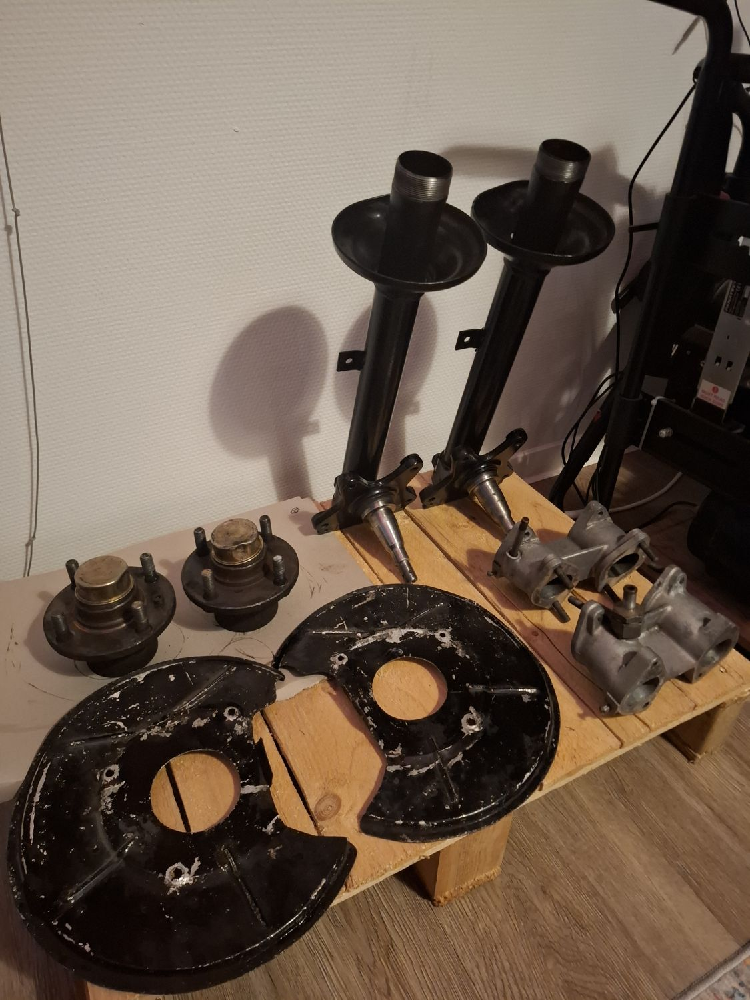
Το πακέτο μόλις έφτασε, 27 Σεπτεμβρίου
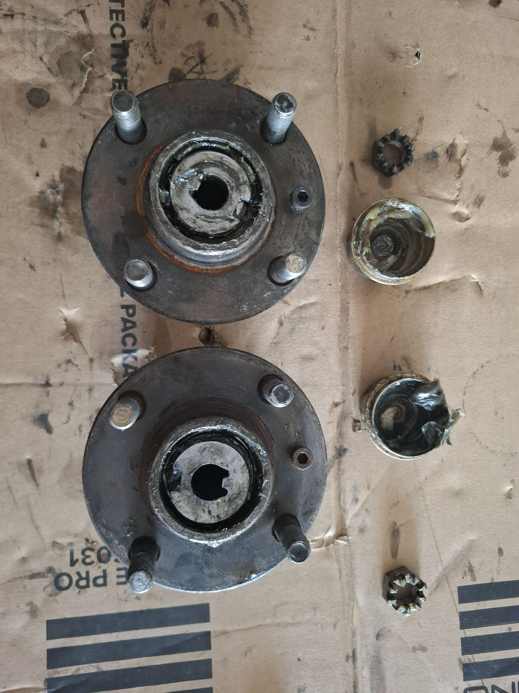
Τα μουαγιέ E21 όπως ήρθαν
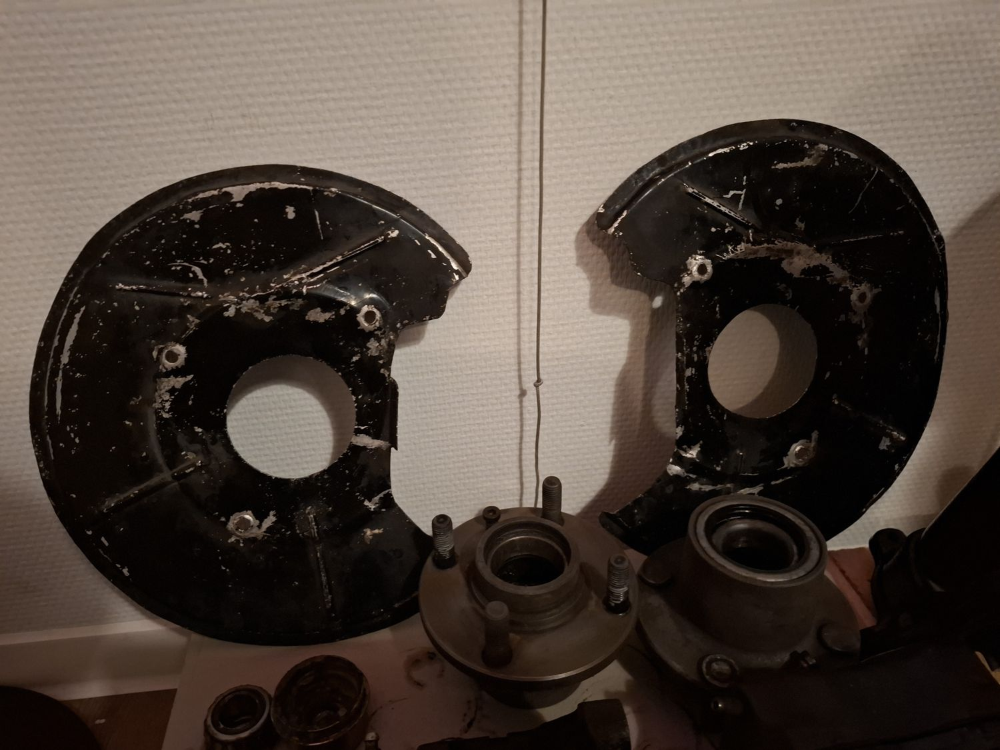
Οι χειροποίητες ασπίδες αλουμινίου του προηγούμενου ιδιοκτήτη
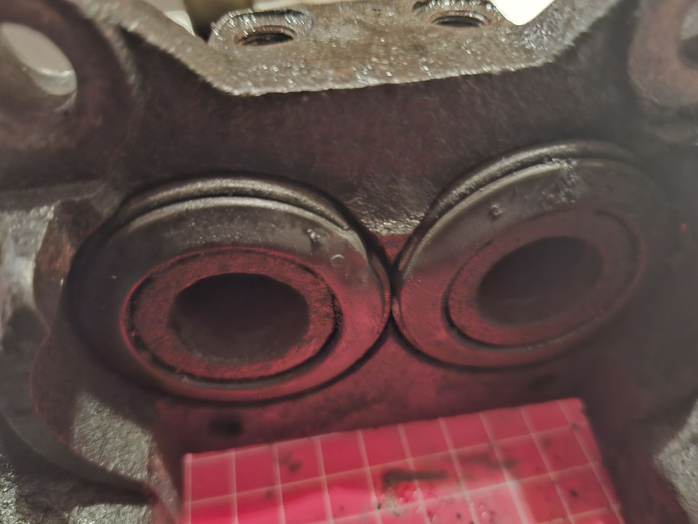
Οι παλιές δαγκάνες: διαβρωμένοι κύλινδροι στα πιστόνια
Γόνατα
Τα γόνατα τα είχε βάψει ηλεκτροστατικά ο προηγούμενος ιδιοκτήτης πριν από χρόνια και ήταν ακόμα σε καλή κατάσταση, οπότε ήθελαν μόνο ένα πολύ καλό καθάρισμα. Μέτρησα την απόσταση ανάμεσα στα σημεία στήριξης της δαγκάνας για να βεβαιωθώ ότι είναι όντως γόνατα ti: τα γόνατα ti/tii/Turbo έχουν τις φαρδύτερες βάσεις δαγκάνας στα 88,9 mm, τα «μικρά» 02 στα 76,2 mm.
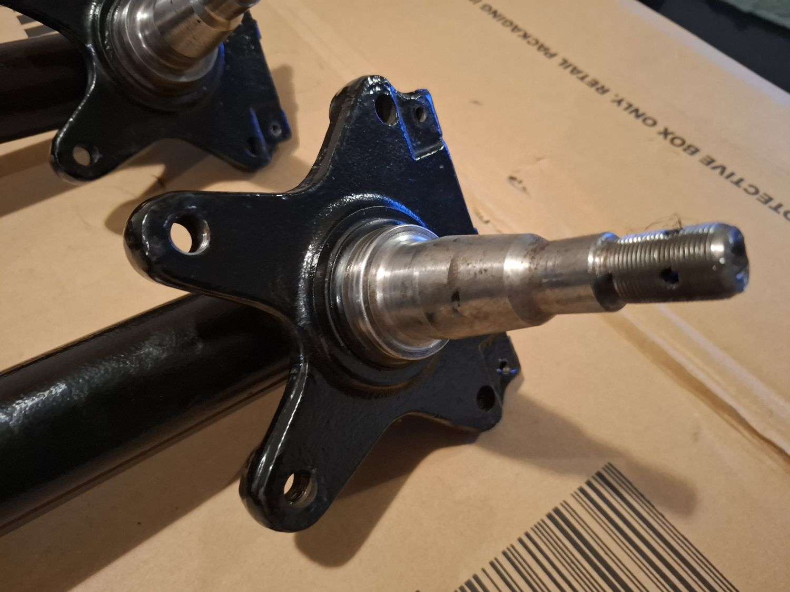
Βαμμένο ηλεκτροστατικά γόνατο ti με το ακραξόνιο
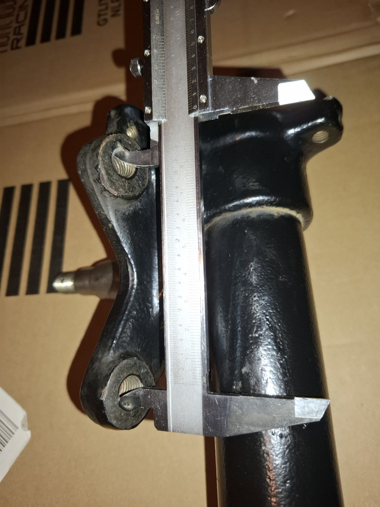
Μέτρηση των βάσεων της δαγκάνας
Μουαγιέ: καινούργια μπουζόνια
Τα μουαγιέ είχαν ακτινικό τζόγο στα μπουζόνια: τα ραβδωτά μπουζόνια δεν κάθονταν πια σφιχτά στις τρύπες τους. Καθάρισα τα μουαγιέ με υπερήχους και τα ξεσκούριασα εντελώς, και μετά πέρασα μεγαλύτερα (oversize) ραβδωτά μπουζόνια, Febi 33499 (M12×1.5, κλάση 10.9), που πιάνουν σωστά στις φαγωμένες τρύπες. Δεν χρειάστηκε πρέσα: τράβηξα κάθε μπουζόνι στη θέση του με ένα κωνικό παξιμάδι τροχού. Πρώτα με την κωνική πλευρά προς το μουαγιέ, ώστε το μπουζόνι να κεντράρει μόνο του στην τρύπα, και μετά ανάποδα, με την επίπεδη πλευρά, βάζοντας από κάτω δυο γρασαρισμένες ροδέλες. Μετά: αστάρι πρόσφυσης 1K (etch primer) και μαύρο 1K.
Γιατί χαλάρωσαν τα παλιά μπουζόνια: είχαν μήκος 47 mm και κοντή ράβδωση (περίπου 5,5–6 mm, Ø14,0 mm), οπότε έπιαναν μόνο σε ένα μέρος της φλάντζας του μουαγιέ (10,8 mm), και οι τρύπες είχαν φαγωθεί στα 14,00–14,20 mm. Τα Febi έχουν λίγο μεγαλύτερη (περίπου 14,25 mm) και μακρύτερη ράβδωση. Το καθένα ήθελε αρκετή δύναμη για να μπει και κάθισε ίσια και πρόσωπο, πολύ πιο σφιχτά από τα παλιά. Με μια παλιά δισκόπλακα στη θέση της εξέχουν περίπου 26 mm από την επιφάνεια της δισκόπλακας. Στο αυτοκίνητο θα πάρουν σημάδι ελέγχου και ξανασφίξιμο (περίπου 100 Nm) μετά τις πρώτες διαδρομές.
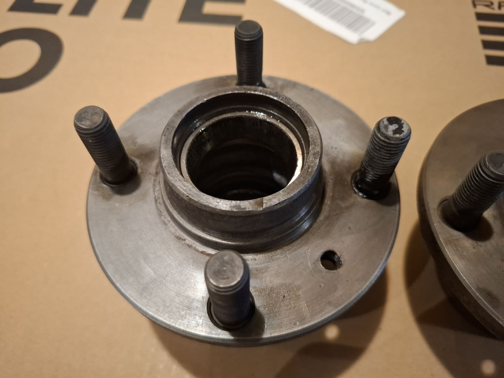
Το μουαγιέ με τα αρχικά του μπουζόνια
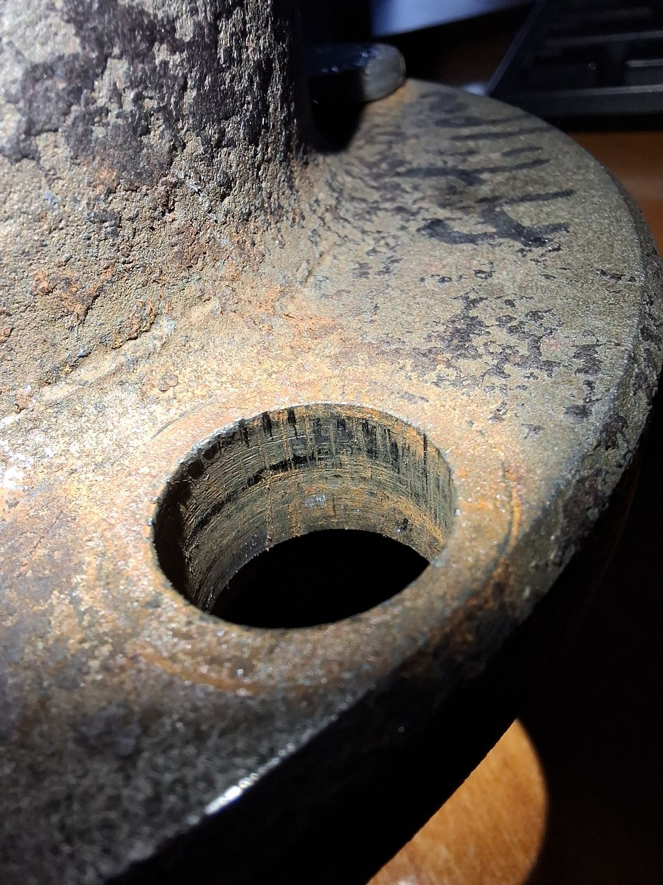
Φαγωμένη τρύπα μπουζονιού
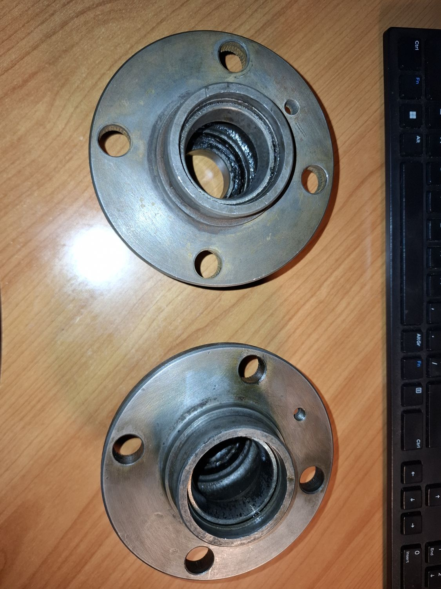
Τα μουαγιέ ξεσκουριασμένα
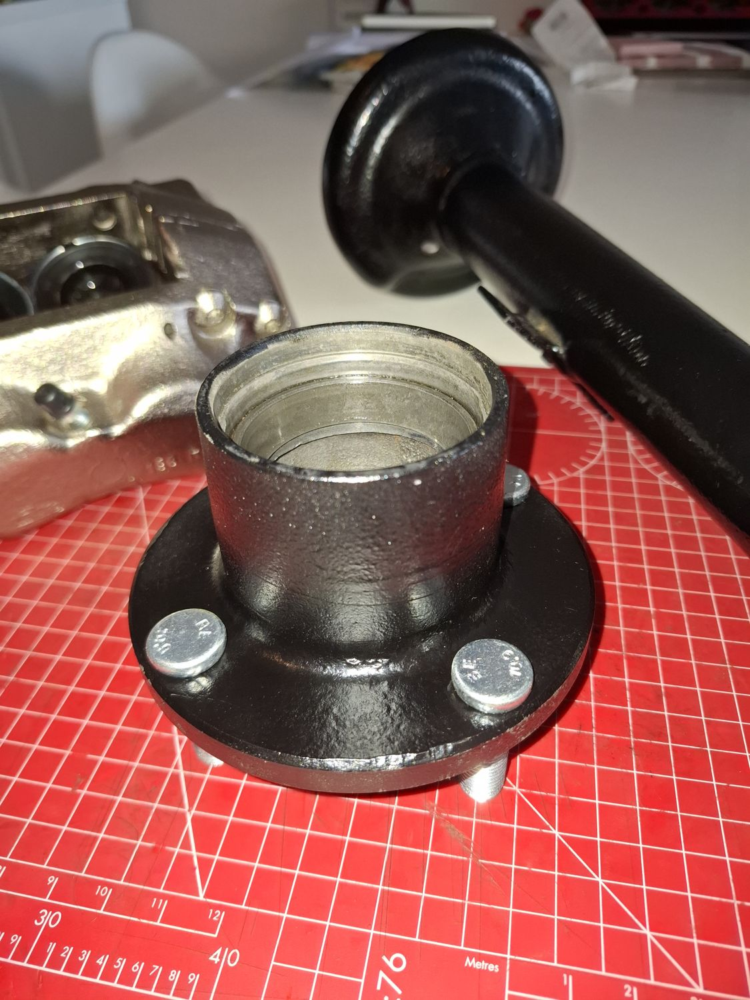
Βαμμένα, με τα καινούργια μπουζόνια
Έλεγχος απόκλισης (run-out)
Με τα μουαγιέ πάνω στα γόνατα έλεγξα με ωρολογιακό μικρόμετρο την απόκλιση (run-out) στην επιφάνεια του μουαγιέ: περίπου 0,05 mm στο ένα και γύρω στα 0,04 mm στο άλλο. Αυτή είναι η συνολική κίνηση της βελόνας, πολύ καλή για μουαγιέ 50 ετών. Ο έλεγχος που μετράει πραγματικά έρχεται αργότερα: η απόκλιση της καινούργιας δισκόπλακας όταν μπει.
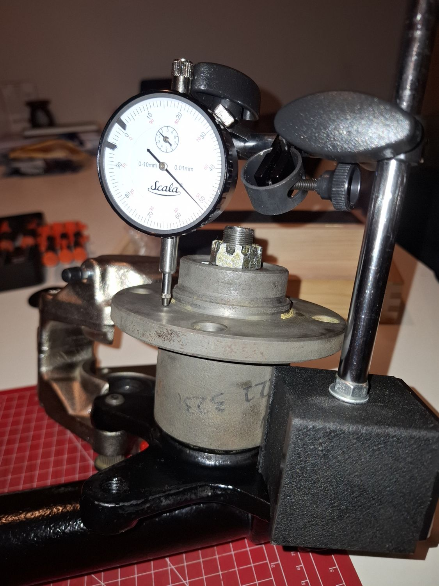
Το ωρολογιακό μικρόμετρο στο μουαγιέ, 14 Οκτωβρίου
Δαγκάνες: καινούργιες για το αυτοκίνητο, οι παλιές αποκαταστημένες για πούλημα
Στη Veterama τον Οκτώβριο βρήκα ένα αποκαταστημένο ζευγάρι γνήσιες τετραπίστονες δαγκάνες ATE του φαρδιού τύπου με αποστάτες για αεριζόμενες δισκόπλακες (E3/E9/2002 Turbo), σε άριστη κατάσταση. Ο τεχνίτης έκρινε ότι τα πιστόνια και οι βίδες ήταν αρκετά καλά για να μείνουν. Το φινίρισμα είναι μεταλλική επιμετάλλωση: μοιάζει με νίκελ, αλλά μπορεί να είναι και ψευδάργυρος, δεν το έχω επιβεβαιώσει. Αυτές θα μπουν στο αυτοκίνητο.
Τις παλιές δαγκάνες του πακέτου τις έλυσα εντελώς, τις ξεσκούριασα με κιτρικό οξύ στη συσκευή υπερήχων και τις πέρασα με συρματόβουρτσα. Τα πιστόνια καθάρισαν ωραία. Είναι γνήσια χυτά ATE με τους αποστάτες, πλήρεις. Το σχέδιο: ανακατασκευή με σετ πιστονιών και τσιμουχών ATE και καινούργιες βίδες εξαέρωσης ATE (τρεις ανά δαγκάνα), βάψιμο σε ασημί-γκρι με το δισυστατικό βερνίκι δαγκάνων της Foliatec, δοκιμή πίεσης, και πώληση ως σωστά ανακατασκευασμένο ζευγάρι μαζί με τις ασπίδες αλουμινίου του προηγούμενου ιδιοκτήτη, αντί να τις δώσω για την εγγύηση.
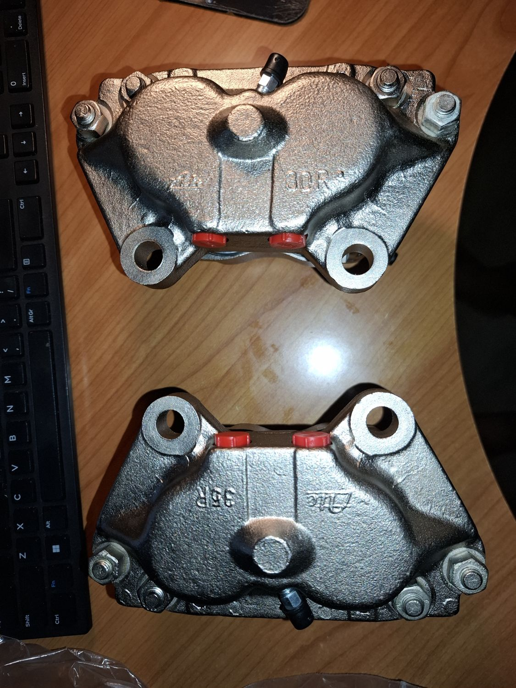
Οι αποκαταστημένες δαγκάνες Turbo από τη Veterama
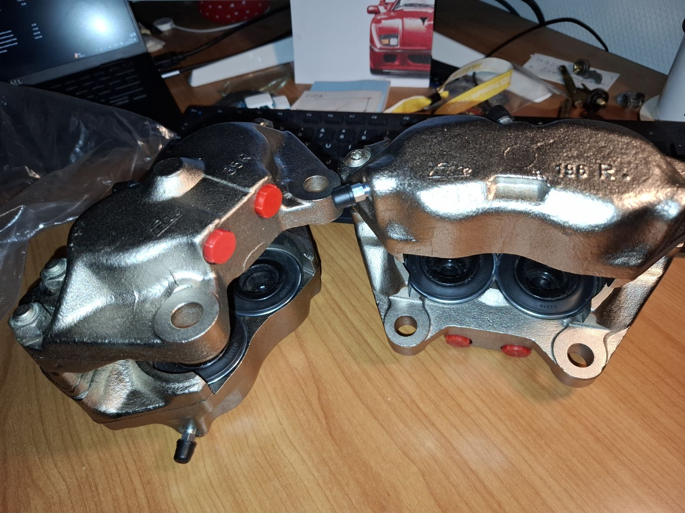
Και οι δύο καινούργιες δαγκάνες
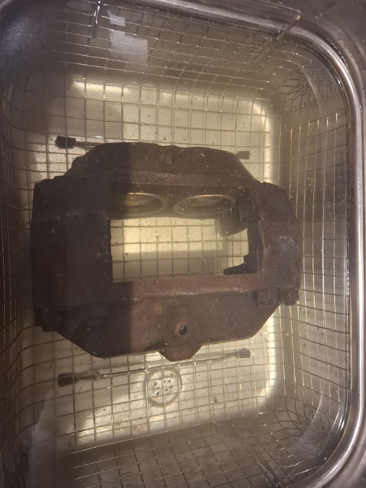
Παλιά δαγκάνα στο λουτρό υπερήχων
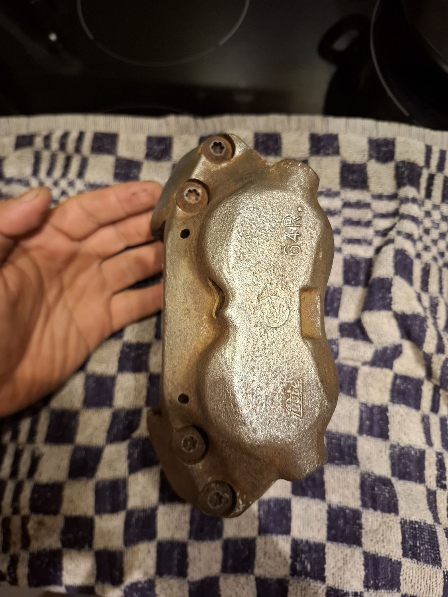
Μετά το κιτρικό οξύ
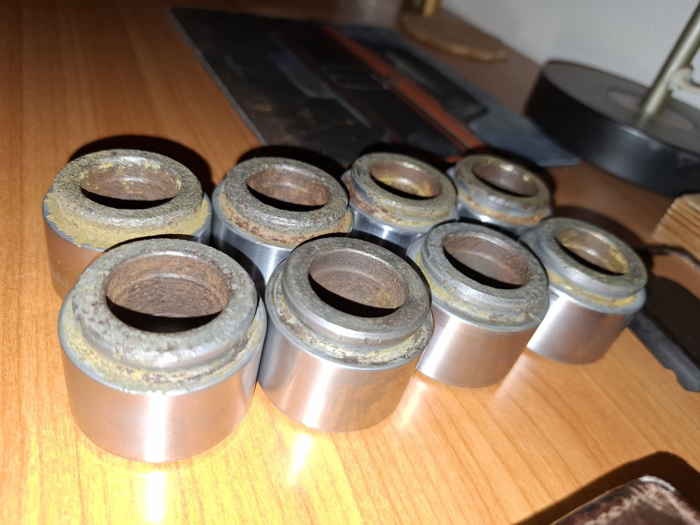
Τα πιστόνια καθαρισμένα
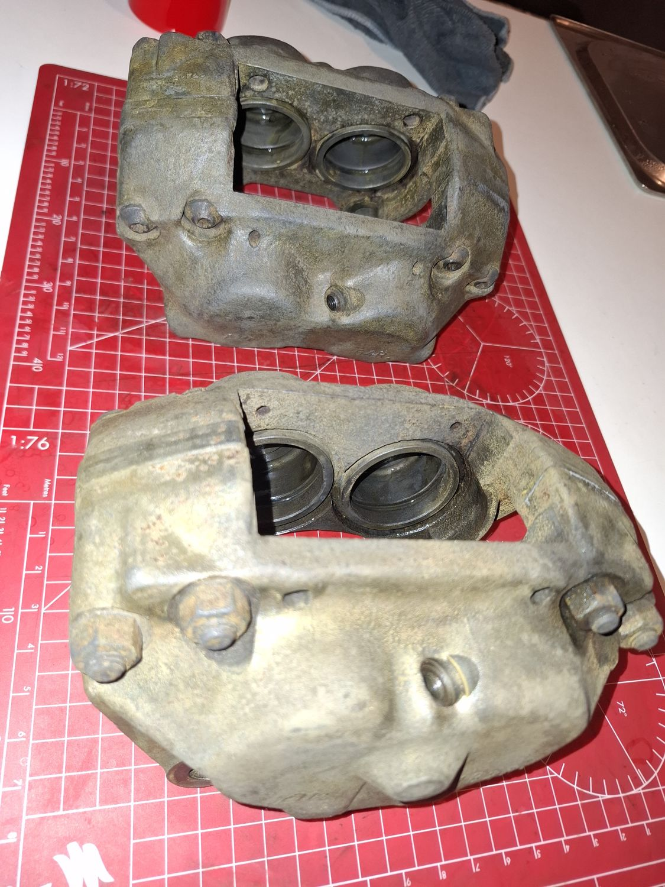
Περασμένες με συρματόβουρτσα, έτοιμες για βάψιμο
Ασπίδες: Neue Klasse, σε στιλ Alpina
Η Alpina έβαζε στα 02 ασπίδες δισκόπλακας από Neue Klasse, γιατί με το σχήμα τους «μαζεύουν» αέρα και τον στέλνουν στη δισκόπλακα. Αγόρασα ένα καινούργιο ζευγάρι (BMW 34 11 2 760 114), τις δοκίμασα στα γόνατα, τις σημάδεψα και τις έκοψα με Dremel 4250 και ενισχυμένους δίσκους κοπής στις 15.000–20.000 στροφές περίπου (ένας δίσκος ανά ασπίδα), και μετά τις λείανα και τις έβαψα μαύρες. Κάθονται συμμετρικά πίσω από τα σημεία στήριξης του γονάτου· στο πιο ακραίο σημείο τους φτάνουν περίπου 145 mm από το κέντρο, μόλις 5 mm πιο έξω από τη δαγκάνα (περίπου 140 mm), οπότε η αεριζόμενη δισκόπλακα μένει σε μεγάλο βαθμό ανοιχτή. Τις χειροποίητες ασπίδες αλουμινίου του προηγούμενου ιδιοκτήτη τις ξέβαψα και τις έβαψα μαύρες· θα φύγουν μαζί με τις παλιές δαγκάνες.
Η Alpina έβαζε την ασπίδα της Neue Klasse από την εσωτερική πλευρά του γονάτου, ώστε το χείλος της να κάθεται ακριβώς δίπλα στην αεριζόμενη δισκόπλακα και να της στέλνει αέρα. Το βιβλίο του Gert Hack How to make it faster δείχνει την τοποθέτηση της εποχής.
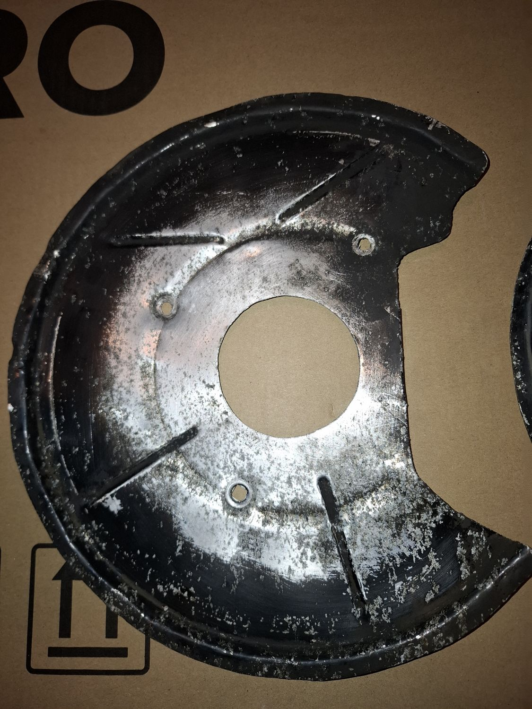
Οι ασπίδες αλουμινίου πριν από το ξεβάψιμο
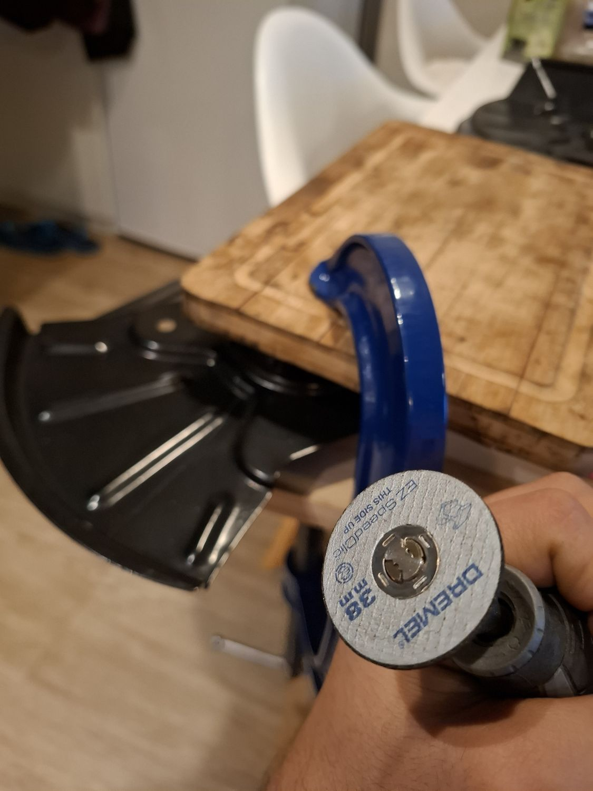
Κόβοντας την ασπίδα Neue Klasse
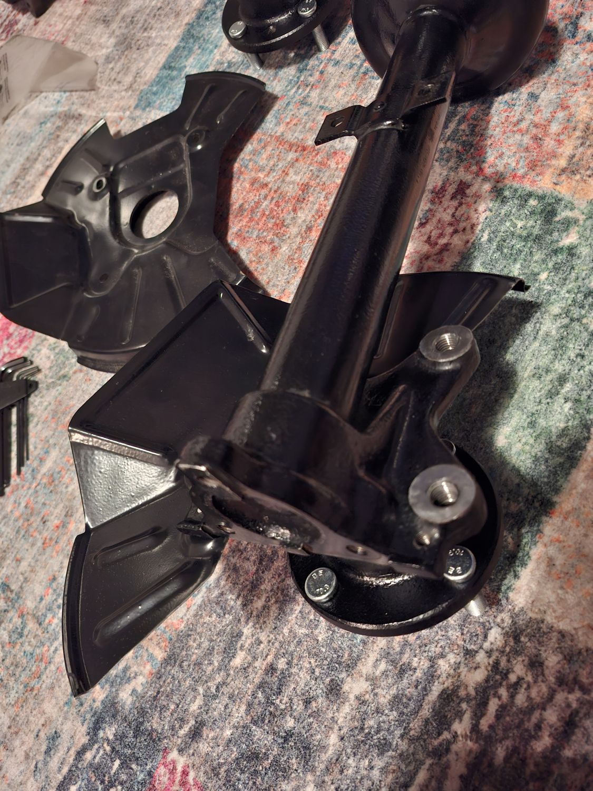
Η ασπίδα στη θέση της πίσω από το γόνατο
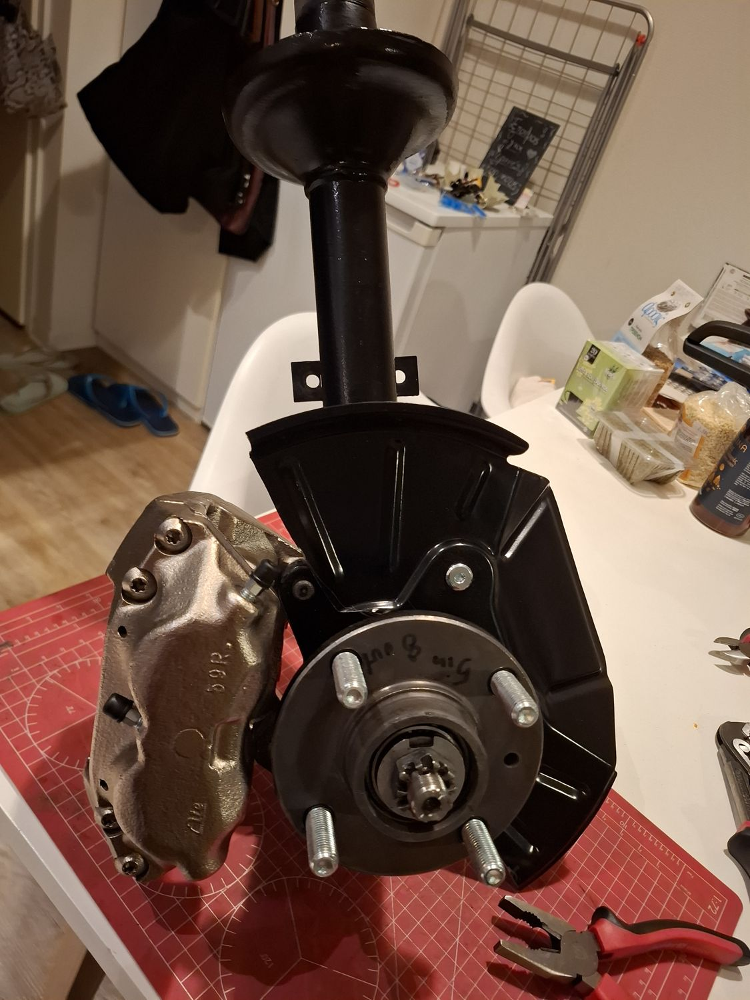
Μουαγιέ, δαγκάνα και ασπίδα μαζί
Δισκόπλακες: BALO NOS
Τις μεταχειρισμένες δισκόπλακες του πακέτου τις έλεγξα, αλλά για το αυτοκίνητο ο πατέρας μου βρήκε ένα ζευγάρι καινούργιες δισκόπλακες BALO παλαιού αποθέματος (NOS) για E21 323i: BALO 02038 = BMW 34 11 1 119 111 (34 11 1 117 038), made in West Germany, αμεταχείριστες και ακόμα στο κουτί τους. Πριν μπουν: καθάρισμα του λαδιού συντήρησης, έλεγχος για σκουριά από την αποθήκευση, μέτρηση πάχους, έλεγχος απόκλισης στο αυτοκίνητο και στρώσιμο.
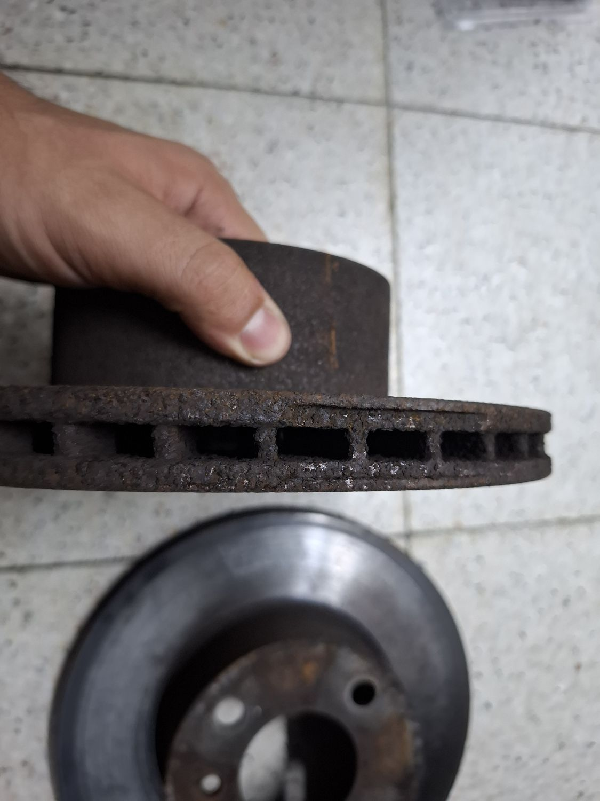
Οι μεταχειρισμένες δισκόπλακες του πακέτου
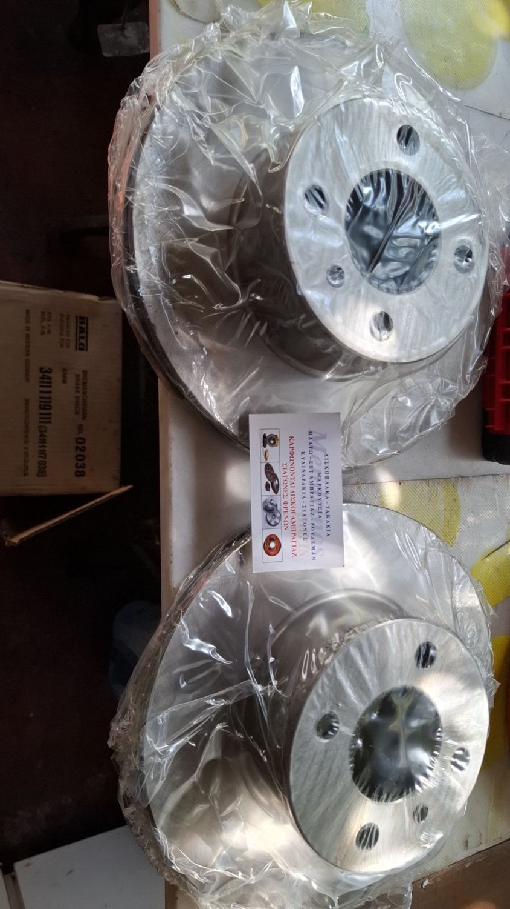
Δισκόπλακες BALO NOS
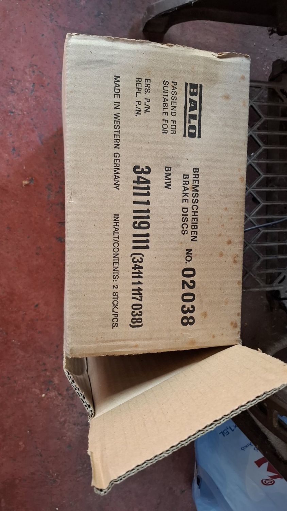
Ακόμα στο αρχικό τους κουτί
Δοκιμαστική τοποθέτηση με τις ζάντες Borrani
Στις 25 Οκτωβρίου έστησα μία γωνία με τις σιδερένιες ζάντες Borrani CMR 6J×13 που έχω, για να δω ότι όλα χωράνε πριν μπουν στο αυτοκίνητο.
Η Borrani 6J×13 περνάει και τη δαγκάνα ATE Turbo και την τροποποιημένη ασπίδα NK.
Τα 26 mm που εξέχουν τα μπουζόνια φτάνουν: τα ανοιχτά παξιμάδια πιάνουν άνετα σε πολλά πάσα, και τα μπουζόνια βγαίνουν λίγο πιο έξω από αυτά.
Τίποτα δεν φαίνεται να ακουμπάει στο κέντρο ή στο εσωτερικό της ζάντας.
Μένει να ελεγχθεί: και οι δύο πλευρές, με αρκετές πλήρεις περιστροφές και τα παξιμάδια σφιγμένα ομοιόμορφα, με στόχο τουλάχιστον 3 mm απόσταση (καλύτερα 5 mm ή παραπάνω), και ξανά με τις δισκόπλακες BALO. Τα παξιμάδια της δοκιμής έφταναν για τον έλεγχο, αλλά τα τελικά πρέπει να έχουν τη σωστή έδραση για τις ζάντες Borrani.
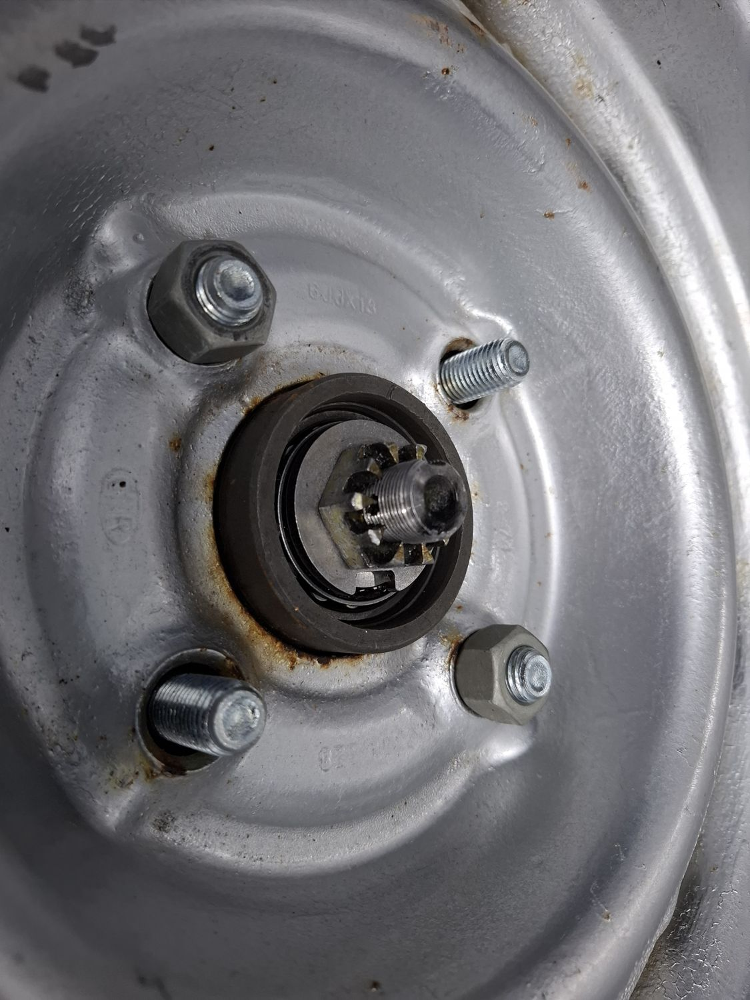
Ο τροχός στο μουαγιέ: τα μπουζόνια βγαίνουν μόλις από τα ανοιχτά παξιμάδια
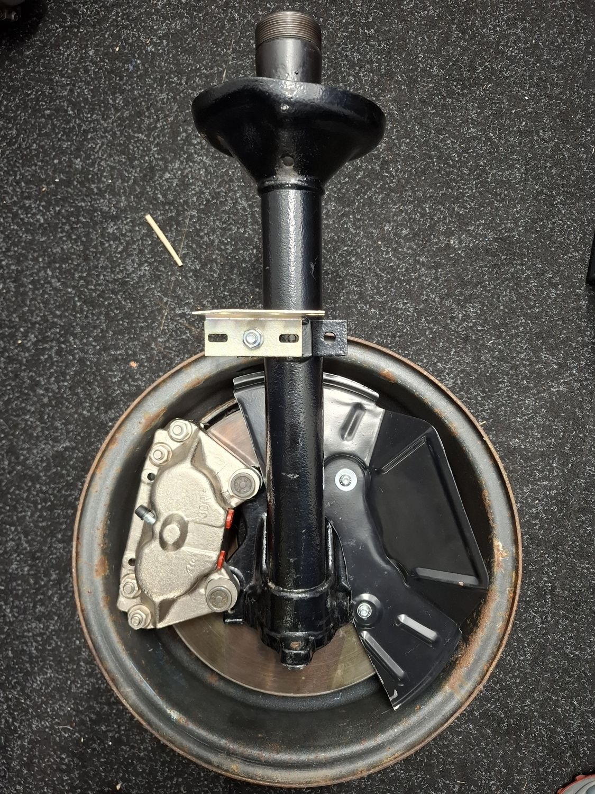
Άλλη γωνία της δαγκάνας και της ασπίδας μέσα στη ζάντα
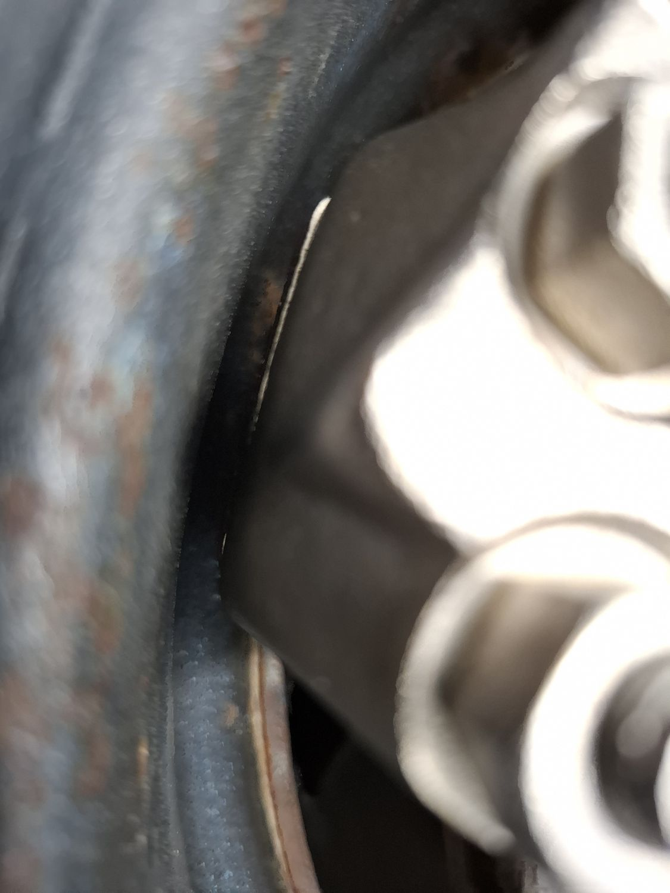
Απόσταση ανάμεσα σε δαγκάνα και ζάντα
Πού βρίσκεται τώρα
Μέχρι τις 22 Οκτωβρίου είχα στήσει δοκιμαστικά και τις δύο πλευρές: γόνατο, μουαγιέ, δαγκάνα Turbo και ασπίδα. Η δουλειά δεν έχει τελειώσει ακόμα. Μένουν:
Καινούργια ρουλεμάν τροχού FAG (713 6671 00) με τα δικά τους κελύφη: τα παλιά ρουλεμάν πέρασαν από τους υπερήχους και το κιτρικό οξύ μαζί με τα μουαγιέ, οπότε δεν θα ξαναμπούν. Πρώτα πρέπει να βγουν τα παλιά κελύφη (εσωτερικός εξολκέας, ένα κορδόνι συγκόλλησης ή συνεργείο).
Να μπουν τα κίτρινα γαλβανισμένα κλιπ και οι κυματοειδείς ροδέλες M12 (Kapteijn). Οι γαλβανισμένες βάσεις για τα μαρκούτσια φρένων έχουν ήδη μπει.
Να φτιαχτούν καινούργια σωληνάκια φρένων από CuNiFe.
Τακάκια: Textar (ήδη στο ράφι), με καινούργιο σετ τοποθέτησης τακακιών Bosch.
Ανακατασκευή, βάψιμο, δοκιμή πίεσης και πώληση των παλιών δαγκανών.
Να μπουν όλα στο Touring.
Τα γόνατα ti που είναι τώρα στο αυτοκίνητο, με τις δαγκάνες που αποκαταστάθηκαν τον Σεπτέμβριο του 2025, θα μείνουν μετά στο ράφι ως εναλλακτική που μπαίνει κατευθείαν. Το δεύτερο μέρος της ιστορίας θα έρθει όταν τα φρένα μπουν στο αυτοκίνητο.
Δύο ιδέες για αργότερα: μια αφαιρούμενη βάση για αισθητήρα ταχύτητας τροχού από ένα κομμάτι της ασπίδας (για καταγραφή δεδομένων και μέτρηση ολίσθησης), και ένα σφιγκτήρα-παξιμάδι ακραξονίου της Porsche αντί για το καστελωτό παξιμάδι με την περόνη, ώστε ο τζόγος του ρουλεμάν να ρυθμίζεται ακριβώς (το είδα στο αυτοκίνητο του Uli Aichholz· Porsche 911 341 673 00, M18×1, μένει να ελεγχθεί στο σπείρωμα του ακραξονίου της BMW).
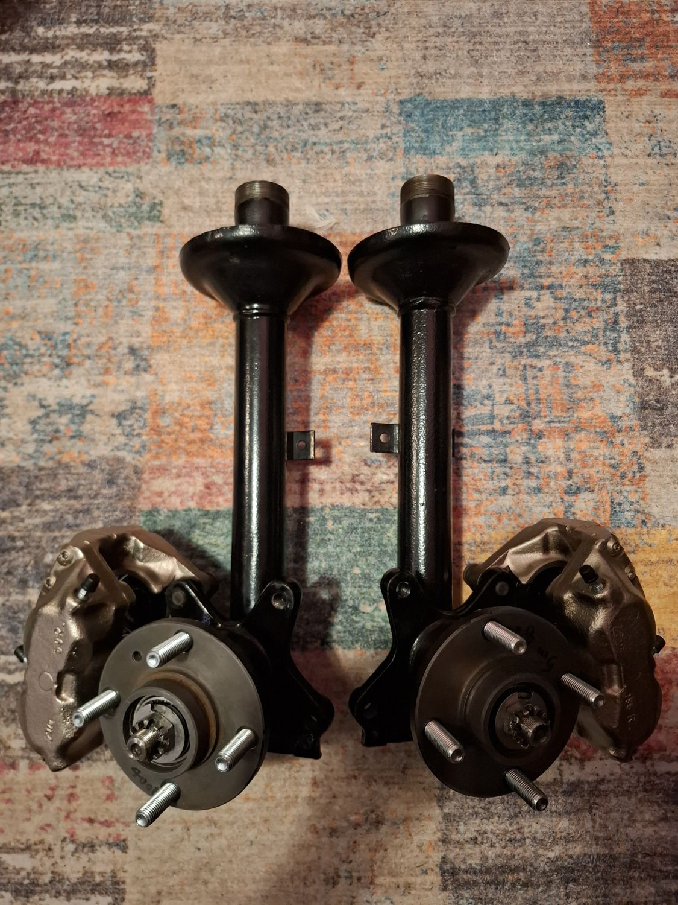
Και τα δύο γόνατα συναρμολογημένα, 17 ΟκτωβρίουΚαι οι δύο πλευρές έτοιμες, 22 Οκτωβρίου
Αριθμός συμμετοχής 6 στην κατηγορία Ομαλότητας της Ανάβασης Βούλας, μία μέρα αφότου τελείωσε η μετατροπή σε διπλά Weber. Δύο ανεβάσεις, μία ο πατέρας μου και μία εγώ, και τρίτη θέση στην κατηγορία μας.
Πότε25 Απρ 2026
Φωτογραφίες16
Ο αγώνας
Την Ανάβαση Βούλας τη διοργανώνει ο ΣΙΣΑ, ο Σύλλογος Ιδιοκτητών Σπορ Αυτοκινήτων, σε έναν δρόμο γεμάτο στροφές στους λόφους πάνω από τη Βούλα, νότια της Αθήνας, με τον Σαρωνικό από κάτω. Στις 25 Απριλίου 2026 δηλώσαμε το Touring στην κατηγορία Ομαλότητας: BMW 1600 Touring, 1971, 1573 cc, αριθμός συμμετοχής 6.
Έγιναν δύο ανεβάσεις. Τη μία την οδήγησε ο πατέρας μου και την άλλη εγώ.
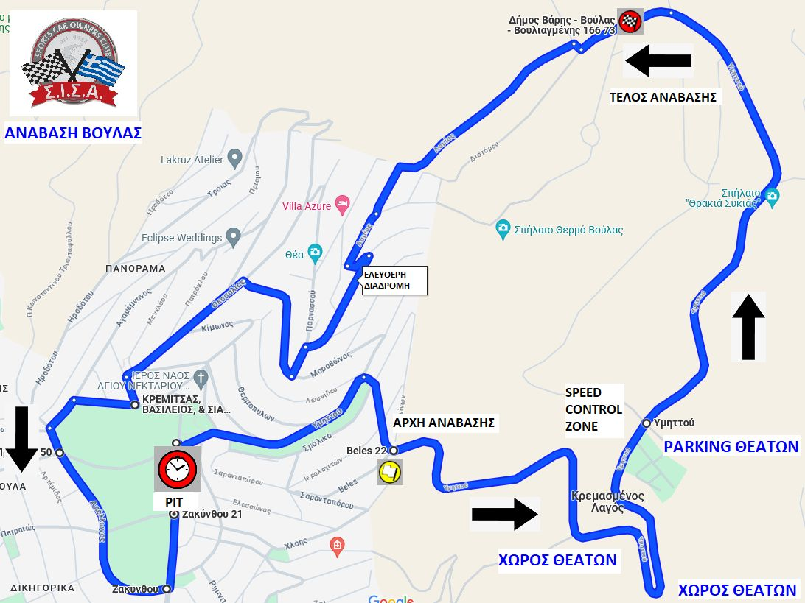
Η διαδρομή: εκκίνηση, ζώνη ελέγχου ταχύτητας, pit και τερματισμός
Η προετοιμασία
Το αυτοκίνητο είχε βγει από το συνεργείο την προηγούμενη μέρα, με τα καινούργια διπλά Weber κάτω από το φιλτροκούτι Alpina. Το απόγευμα πήγε στην εκκίνηση με τον αριθμό στις πόρτες.
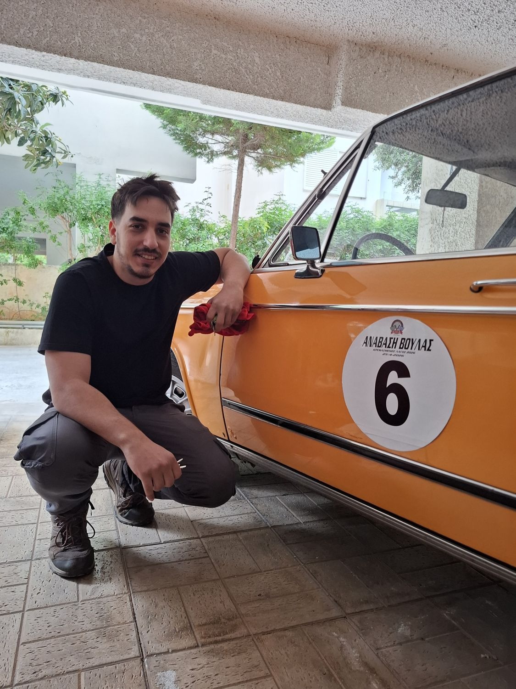
Το νούμερο 6 στην πόρτα
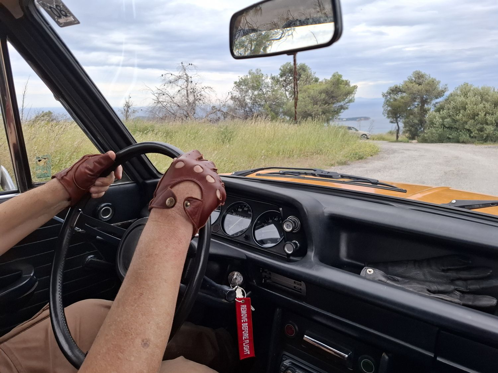
Στον δρόμο για την εκκίνηση
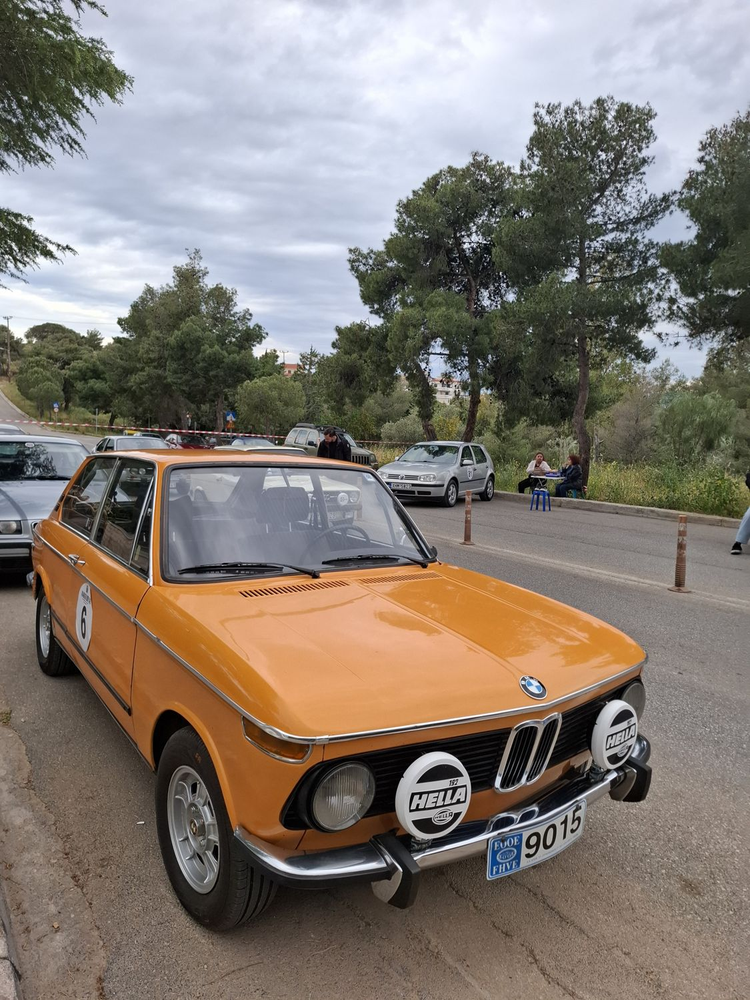
Στη σειρά των αυτοκινήτων πριν την εκκίνηση
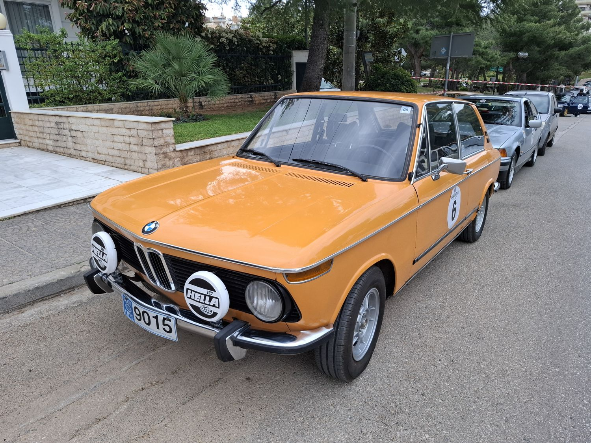
Παραταγμένα
Στην ανάβαση
Ο φωτογράφος του αγώνα έπιασε το Touring σχεδόν σε κάθε στροφή. Αυτές είναι οι αυθεντικές, ανεπεξέργαστες φωτογραφίες του, οπότε το χρώμα του αυτοκινήτου είναι το πραγματικό.
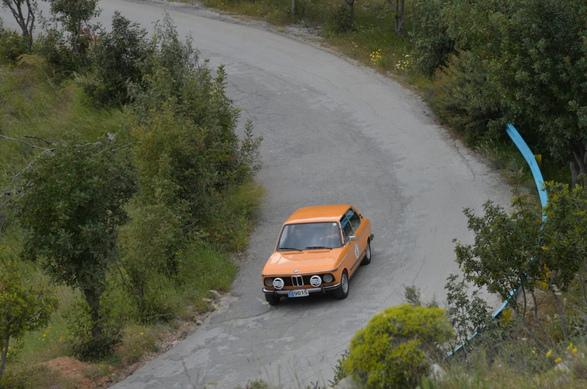
Η φουρκέτα από ψηλά
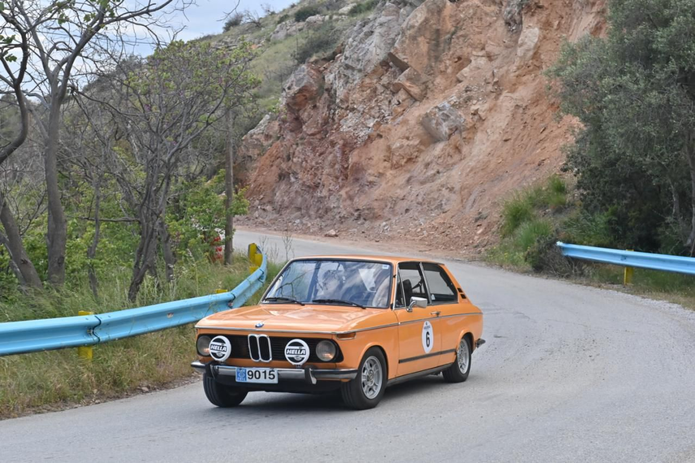
Δίπλα στον βράχοΤο νούμερο 6 από το πλάι
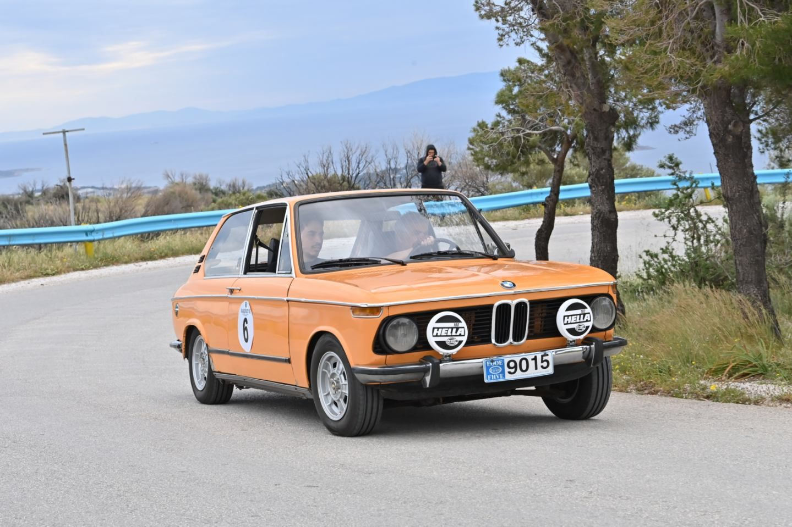
Από μπροστά
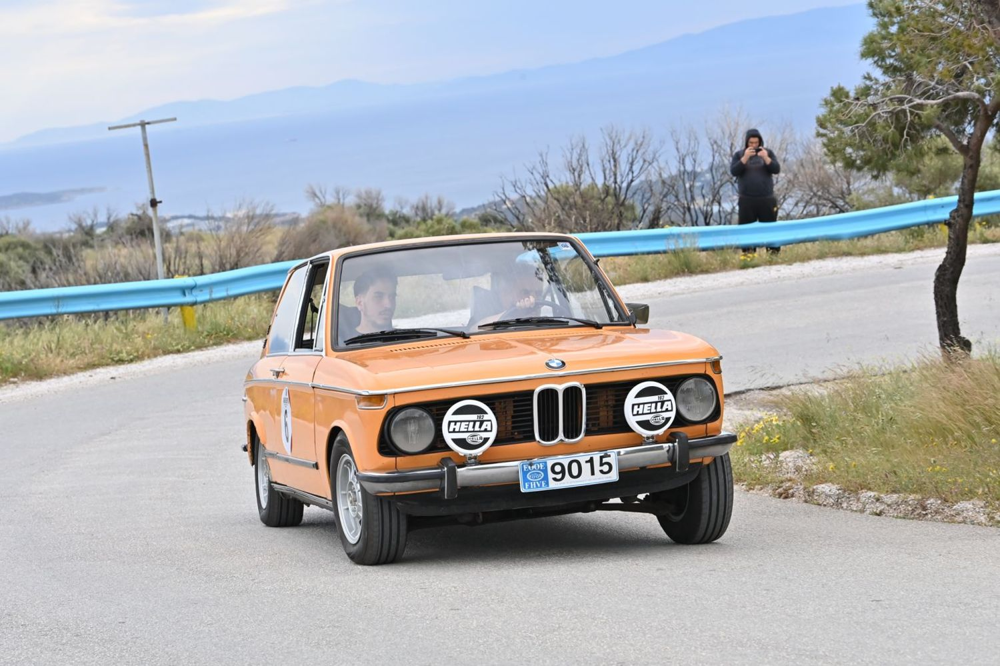
Βγαίνοντας από τη στροφή
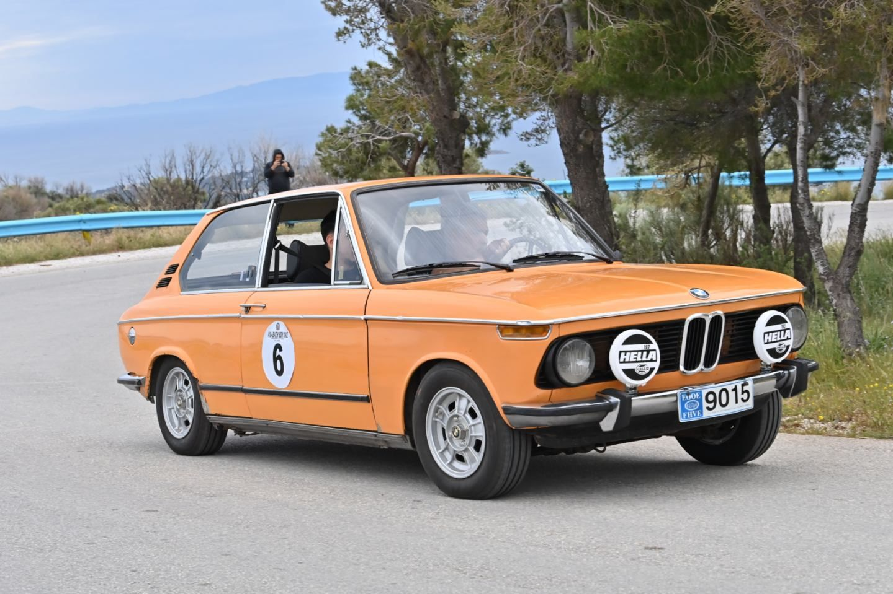
Μπαίνοντας στη στροφήΑνεβαίνοντας με τη θάλασσα πίσω
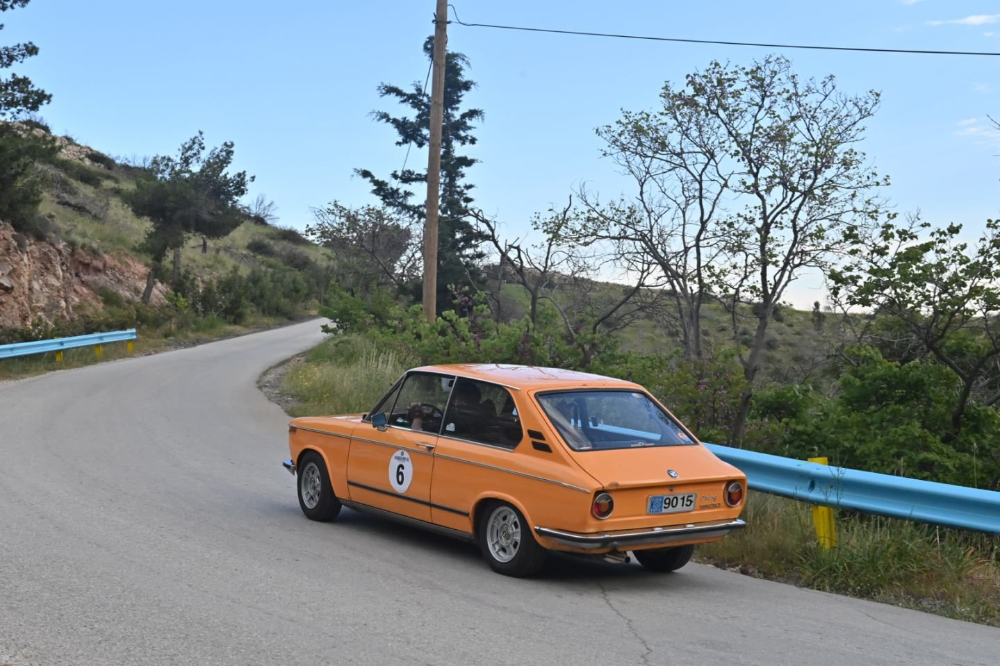
Φεύγοντας προς τα πάνω
Φωτογραφίες από την ανάβαση: ο φωτογράφος του αγώνα.
Τρίτη θέση, και η επιστροφή
Το βράδυ στην απονομή πήραμε την τρίτη θέση στην κατηγορία μας. Το Touring γύρισε μέσα στη νύχτα με το φιλτροκούτι Alpina σε κοινή θέα.
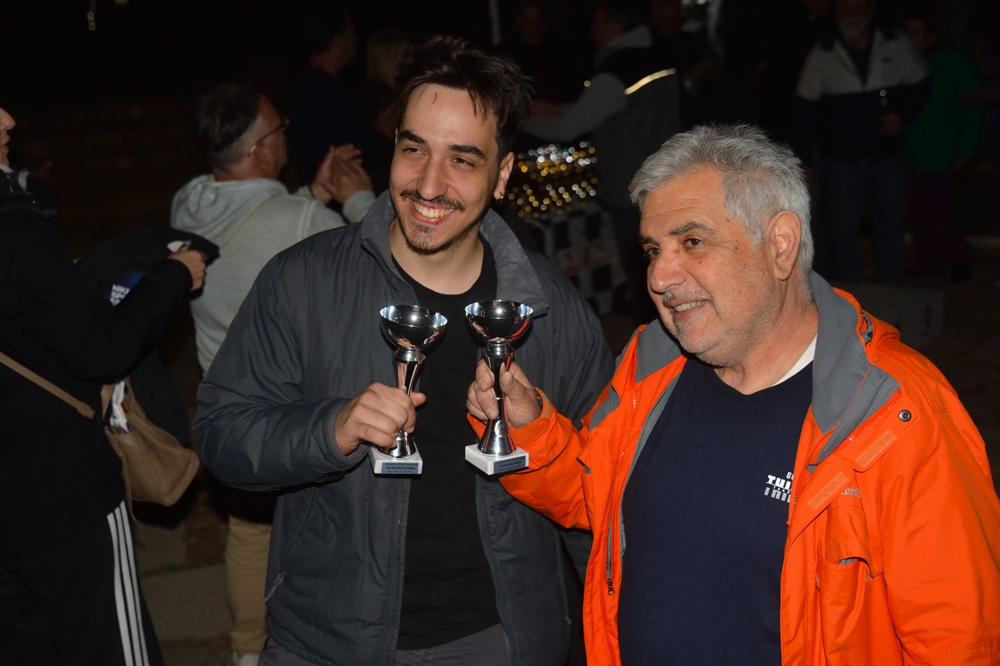
Τρίτη θέση: ο πατέρας μου κι εγώ στην απονομή (φωτογράφος του αγώνα)
Διπλά Weber σε δύο εβδομάδες, ακριβώς στην ώρα για τη Βούλα
Ένα ανέγγιχτο ζευγάρι Weber 40 DCOE 76/77 από την αποθήκη του πατέρα μου, ξαναφτιαγμένο και τοποθετημένο κάτω από ένα φιλτροκούτι Alpina μέσα σε δύο εβδομάδες. Τελείωσε την παραμονή της Ανάβασης Βούλας.
Η Ανάβαση Βούλας ήταν στις 25 Απριλίου 2026 και ήθελα να πάει το Touring με διπλά πλαγιορροής Weber αντί για το αρχικό μονό καρμπιρατέρ Solex του 2002 2.0. Έμεναν περίπου δύο εβδομάδες, και τελικά ήταν δουλειά-τρέλα. Την κάναμε μαζί με τον πατέρα μου, στην αυλή του στην Αθήνα.
Τα καρμπιρατέρ
Τα καρμπιρατέρ είναι ένα αυθεντικό, ανέγγιχτο ζευγάρι Weber 40 DCOE 76/77 που βρέθηκε στην αποθήκη του πατέρα μου. Δεν κόστισαν τίποτα, αλλά ήθελαν πλήρη ανακατασκευή πριν πλησιάσουν καν τη μηχανή.
Τα Weber όπως βγήκαν από την αποθήκηΟι λαστιχένιες φούσκες εισαγωγής
Η ανακατασκευή
Τα έλυσα και τα δύο εντελώς και καθάρισα κάθε κομμάτι σχολαστικά. Κάθε μπεκ, κάθε σωλήνας γαλακτωματοποίησης και κάθε μικροεξάρτημα μπήκε στο δικό του ποτηράκι, για να μην μπερδευτεί τίποτα ανάμεσα στα δύο καρμπιρατέρ. Ξαναμοντάρθηκαν με καινούργια σετ φλάντζες. Τα ρουλεμάν στους άξονες των πεταλούδων ήταν σε άριστη κατάσταση, οπότε τα άφησα.
Χωρίς το πάνω καπάκιΤο ζευγάρι καθαρισμένο, 10 ΑπριλίουΜπεκ και μικροεξαρτήματα ταξινομημένα σε ποτηράκιαΈνας σωλήνας γαλακτωματοποίησηςΔουλεύοντας τα καρμπιρατέρ στο γραφείο, 13 ΑπριλίουΈνα ανακατασκευασμένο καρμπιρατέρ
Τα μπεκ είναι στη ρύθμιση εργοστασίου για το 40 DCOE 76/77 (από τον πίνακα εφαρμογών της Weber για την Alfa Romeo 2000, τετρακύλινδρο 1962 cc όπως και ο M10): διαχύτης 32, βοηθητικός διαχύτης 4.5, κύριο μπεκ 135, διορθωτής αέρα 210, σωλήνας γαλακτωματοποίησης F34, μπεκ ρελαντί 55 F17, τσοκ (starter) 85 F9, μπεκ επιταχυντικής αντλίας 35, βελόνα πλωτήρα 150.
Πολλαπλές, φλάντζες και ψυκτικό
Οι πολλαπλές εισαγωγής καθαρίστηκαν και γυαλίστηκαν· δεν χρειάστηκε ταίριασμα των θυρίδων. Ανάμεσα σε κεφαλή και πολλαπλή μπήκαν καινούργιες χάρτινες φλάντζες, και ανάμεσα σε πολλαπλή και καρμπιρατέρ καινούργιες φαινολικές φλάντζες-αποστάτες με δύο χάρτινες φλάντζες η καθεμία (Walloth & Nesch). Όλες οι ροδέλες και τα παξιμάδια είναι καινούργια. Τα παξιμάδια πολλαπλής-καρμπιρατέρ είναι 13 mm αντί για τα αρχικά 12 mm, γιατί δεν βρήκαμε γνήσια 12 mm της BMW. Αυτό κάνει το σφίξιμο των καρμπιρατέρ πάνω στις πολλαπλές λίγο πιο ζόρικο.
Για το ψυκτικό χρησιμοποίησα έναν καθαρισμένο γνήσιο διανομέα νερού 2002ti. Ο μεταλλικός σωλήνας bypass που χρειάζεται μια μηχανή με διπλά καρμπιρατέρ ήρθε από ένα E30 318i M10 με L-Jetronic, με τη μία μικρή έξοδό του τάπα. Έτσι η σωλήνα του καλοριφέρ στο τείχος μένει ακριβώς όπως ήταν, και η επιστροφή σε μονό καρμπιρατέρ θα ήταν εύκολη.
Ντίζες και γκάζι
Ο γνήσιος μηχανισμός γκαζιού του 2002ti ήταν σε άριστη κατάσταση και μπήκε κατευθείαν πίσω. Η βάση τύπου γέφυρας που βιδώνει στις μπουζόνες της πολλαπλής ανέβηκε με δύο χοντρές ροδέλες, για να περνάει ο μηχανισμός πάνω από τους διαχύτες. Τους ειδικούς λεβιέδες για DCOE δεν τους είχα· τους αγόρασα ξεχωριστά από τον Αθανασάκο.
Η βάση στο τείχος που στηρίζει τον μηχανισμό πήρε καινούργιο δαχτυλίδι, μαλακωμένο σε ζεστό νερό για να μπει, και ο θόρυβος εξαφανίστηκε. Ένα ελατήριο επαναφοράς γκαζιού πάει από τον λεβιέ του αριστερού καρμπιρατέρ στη μπουζόνα στο πλάι της πολλαπλής, όπως σε ένα γνήσιο 2002ti.
Η ντίζα από την πεταλιέρα προς τον μηχανισμό των καρμπιρατέρ έπρεπε να ισιώσει. Το ti έχει δική του βάση στο τείχος, που σπρώχνει τη ντίζα στο πλάι, και τότε μια στραβή ντίζα χτυπάει στο σασμάν και στον συμπλέκτη. Το ti έχει από το εργοστάσιο ίσια ντίζα, αλλά δεν βρήκαμε. Τα κλιπ και στις δύο άκρες της ντίζας είναι καινούργια.
Καρμπιρατέρ και ανταλλακτικά στον πάγκο, 15 ΑπριλίουΣτήσιμο του μηχανισμού γκαζιού
Το φιλτροκούτι Alpina
Το φιλτροκούτι ήρθε μαζί με το γνήσιο σετ Alpina A1 Solex DDH που αγόρασα· το αποκαταστήσαμε στο Delft τον Φεβρουάριο, και τώρα έχει γράμματα Alpina από τη Walloth & Nesch. Από το ίδιο σετ ήρθαν και οι γυαλισμένες χοάνες εισαγωγής και ένας δεύτερος μηχανισμός γκαζιού. Οι χοάνες χρειάζονται επειδή οι σωλήνες του φίλτρου είναι κεκλιμένοι, και κάνουν τη σύνδεση ανάμεσα στα καρμπιρατέρ και το κουτί. Το κουτί στηρίζεται σε μία από τις μπουζόνες του θόλου της ανάρτησης με μια βάση που είναι κι αυτή γνήσια του σετ A1.
Το φιλτροκούτι AlpinaΌλο το κιτ μαζί, 18 ΑπριλίουΈτοιμο για να μπει
Στο αυτοκίνητο
Στις 20 Απριλίου βγήκε η παλιά εισαγωγή, σκεπάσαμε τις θυρίδες, και μπήκαν οι πολλαπλές και τα καρμπιρατέρ. Οι επόμενες μέρες πήγαν στις ντίζες, στις σωληνώσεις βενζίνης και στο φιλτροκούτι.
Η παλιά διάταξη βγαλμένη, 20 ΑπριλίουΘυρίδες σκεπασμένες όσο μπαίνουν οι πολλαπλέςΠολλαπλές και καρμπιρατέρ στη θέση τουςΤα καρμπιρατέρ τοποθετημένα, οι χοάνες σκεπασμένεςΙκανοποιημένος με το πρώτο βράδυΣωληνώσεις βενζίνης και ντίζες, 21 Απριλίου
Τελειωμένο, μία μέρα νωρίτερα
Μέχρι τις 24 Απριλίου το φιλτροκούτι Alpina καθόταν στη βάση του και ο χώρος κινητήρα έδειχνε σαν να ήταν πάντα έτσι. Το επόμενο πρωί οδηγήσαμε μέχρι τη Βούλα.
Το φιλτροκούτι στη θέση του, 23 ΑπριλίουΚολάρα και ντίζες κάτω από το κουτίΤελειωμένο, 24 ΑπριλίουΟ τελειωμένος χώρος κινητήραΈτοιμο για τη Βούλα
Αργότερα το καλοκαίρι: ο σωστός διανομέας
Το καλοκαίρι έβαλα έναν καλό γνήσιο Bosch 0 231 151 008 (JFU 4), τον διανομέα (ντιστριμπιτέρ) του 2002 ti και tii με μόνο φυγοκεντρικό αβάνς. Ήταν από το παλιό στοκ του πατέρα μου, φυλαγμένος για αυτό το αυτοκίνητο. Τον έστησα σύμφωνα με το εργοστασιακό εγχειρίδιο και τις οδηγίες του Wolfgang στο φόρουμ του 02-club:
Ο Bosch 0 231 151 008
Στο ρελαντί το αβάνς είναι στο ΑΝΣ.
25° πριν το ΑΝΣ στις 2.200 στροφές, με το σωληνάκι του κενού αποσυνδεδεμένο. (Για τους 0 231 151 008, -009, -003, 0 231 188 002, -001 και 0 231 129 037· μόνο ο 0 231 129 026 φτάνει τις 25° ήδη από τις 1.400 στροφές.) Πάνω στην τροχαλία αυτό είναι περίπου 25 mm από το σημάδι του ΑΝΣ.
Πλήρες αβάνς 30–34° πριν το ΑΝΣ στις 3.500 στροφές, περίπου 32 mm από το ΑΝΣ πάνω στην τροχαλία.
Οι ρυθμίσεις για ένα στάνταρ ti ισχύουν για μηχανές μέχρι εκκεντροφόρο 304°.
Πώς πάει
Γενικά φέρεται καλά και δίνει μια καλή βάση για να δουλέψω. Υπάρχει λίγο φτύσιμο πίσω από τα καρμπιρατέρ σε χαμηλό φορτίο γύρω στις 2.200 στροφές, οπότε το πρώτο που θα δοκιμάσω είναι ένα λίγο πλουσιότερο μπεκ ρελαντί: από 55 F17 σε 60 F17.
Γκρίζο, εύθρυπτο και να ανοίγει στην παλιά ένωση της κόλλας. Ξανακολλημένο με εποξική και σπάγκο, τριμμένο ως το 1000, πολλές στρώσεις tung oil και ένα γερμανικό κερί ξύλου.
Αυτό το ξύλινο τιμόνι Ferrero το είχα καιρό και πάντα σκόπευα να το αποκαταστήσω. Είναι τρίακτινο, με γυαλισμένες διάτρητες ακτίνες και τη χαραγμένη υπογραφή Ferrero. Τον Αύγουστο του 2025 ρώτησα στο φόρουμ bmw2002faq αν ξέρει κανείς κάτι παραπάνω γι' αυτό, αλλά δεν βρήκα σχεδόν καμία πληροφορία πουθενά. Το ξύλο δεν ήταν σε καλή κατάσταση: γκρίζο, ξερό και ραγισμένο στις ενώσεις.
Το τιμόνι, Αύγουστος 2025Η χαραγμένη υπογραφή Ferrero στην ακτίναΡωγμές κατά μήκος της ένωσης του στεφανιού
Άνοιξε στα δύο, ευτυχώς
Τον Ιανουάριο βγήκαν η πλήμνη και η επαφή της κόρνας. Στις 7 Φεβρουαρίου ξεκίνησα με το στεφάνι: το παλιό φινίρισμα έφυγε με σύρμα και τρίψιμο. Καθώς έβγαζα παλιά εποξική κόλλα από το ξύλο κοντά στις ακτίνες, το τιμόνι άνοιξε στα δύο. Ευτυχώς η μόνη ρωγμή ήταν στην ένωση των δύο ξύλινων μισών, που ήταν μεγάλη ανακούφιση. Η αρχική κόλλα είχε γίνει πολύ εύθρυπτη και ξεραμένη με τα χρόνια, και τα μισά είχαν ήδη αρχίσει να χωρίζουν. Κάτω από το ξύλο υπάρχει ένα λεπτό μεταλλικό στεφάνι πάνω στις ακτίνες, και το ξύλο είναι δύο αυλακωτά μισά κολλημένα γύρω του, ένα από κάθε πλευρά.
Πλήμνη και επαφή κόρνας, Ιανουάριος 2026Ο γυμνός σκελετός με τις ακτίνες και το μεταλλικό στεφάνιΤο ένα από τα δύο ξύλινα μισά του στεφανιού, με το αυλάκι τουΣκελετός και τα δύο μισά δίπλα-δίπλα
Ξανά κόλλημα
Έβγαλα όση παλιά κόλλα μπορούσα και έτριψα τα πάντα. Μετά τα τρία κομμάτια, τα δύο ξύλινα μισά και το μεταλλικό στεφάνι, κόλλησαν ξανά με εποξική δύο συστατικών και σφίχτηκαν με τον παλιό καλό τρόπο: δεκάδες γύρους σπάγκο, τραβηγμένο σφιχτά γύρω-γύρω από το στεφάνι, και μετά αναμονή.
Η προετοιμασία: σκελετός, στεφάνια, κόλλα και σπάγκοςΣφιγμένο με σπάγκο γύρω-γύρωΚοντινό στο σφίξιμο με τον σπάγκοΣτεγνό και ξετυλιγμένο
Γέμισμα και τρίψιμο
Σε μερικά σημεία, κυρίως εκεί όπου το ξύλο συναντά τις ακτίνες, υπήρχαν κενά. Τα γέμισα με σκόνη ξύλου ανακατεμένη με εποξική. Αφού στέγνωσε, το περίσσευμα βγήκε με ξυράφι και μετά ξεκίνησε πάλι το τρίψιμο, ανεβαίνοντας σιγά σιγά μέχρι το 1000.
Τριμμένο μέχρι το γυμνό ξύλοΓέμισμα των κενών στην ένωση με την ακτίναΓεμισμένο κενό κατά μήκος του στεφανιού
Λάδι και κερί
Μετά το ξύλο πήρε πολλές στρώσεις tung oil, που η καθεμιά βάθαινε το χρώμα, με το τιμόνι κρεμασμένο να στεγνώνει ανάμεσα στις στρώσεις. Το τελικό φινίρισμα είναι ένα γερμανικό κερί ξύλου (μυρίζει υπέροχα), γυαλισμένο με λεπτό σύρμα. Οι ακτίνες γυαλίστηκαν ελαφρά μέχρι το 2000 και φινιρίστηκαν πάλι με πολύ λεπτό σύρμα.
Μετά τις πρώτες στρώσεις tung oilΤο χρώμα βαθαίνει με κάθε στρώσηΚρεμασμένο να στεγνώσει ανάμεσα στις στρώσειςΤο γερμανικό κερί ξύλου για την τελευταία στρώση
Το αποτέλεσμα
Ήταν μια χρονοβόρα διαδικασία, αλλά είμαι αρκετά ευχαριστημένος με το αποτέλεσμα. Το κουμπί της κόρνας θα χρειαστεί κάποια στιγμή νέα επιμετάλλωση· μάλλον θα γίνει όταν στείλω μια μεγαλύτερη παρτίδα κομματιών για επιμετάλλωση.
Τελειωμένο, με την πλήμνη BMW στη θέση τηςΜαζί με το αποκατεστημένο καντράν και το πόμολο λεβιέ ταχυτήτωνΤελειωμένο, Μάρτιος 2026
Μοιράστηκα το τελειωμένο τιμόνι στο θέμα για τα τιμόνια στο bmw2002faq τον Μάρτιο του 2026 (ο σύνδεσμος παρακάτω).
Φρεσκάρισμα φιλτροκουτιού 2002ti για διπλά καρμπιρατέρ
Ένα γερό αλλά κουρασμένο φιλτροκούτι 2002ti: αστάρι πρόσφυσης και σατινέ μαύρο, ανοιχτά φίλτρα τύπου Alpina αντί για τις «προβοσκίδες», και καινούργια στηρίγματα φτιαγμένα για να τα κρατάνε σωστά.
Πότε28 Ιαν – 1 Μαρ 2026
Φωτογραφίες13
ΚωδικόςP-0165
Γιατί αυτό το κομμάτι
Για το σύστημα με τα διπλά καρμπιρατέρ στο Touring ήθελα το γνήσιο φιλτροκούτι του 2002ti. Αυτό ήρθε μαζί με το γνήσιο σετ Alpina A1 με Solex DDH που αγόρασα, μαζί με τις χοάνες εισαγωγής, μια βάση στήριξης και δεύτερο μηχανισμό γκαζιού. Ήταν γερό αλλά κουρασμένο: φαγωμένη μπογιά και επιφανειακή σκουριά.
Όπως ήρθε, Ιανουάριος 2026Τα αρχικά φίλτραΦαγωμένη μπογιά και σημάδια σκουριάς
Βάψιμο
Το ξέβαψα όπου χρειαζόταν, πέρασα αστάρι πρόσφυσης (etch primer) και το έβαψα σατινέ μαύρο. Δεν ήθελα να γυαλίζει πολύ.
ΚαθαρισμένοΒαμμένο μέσαΈξω σε σατινέ μαύρο
Φίλτρα τύπου Alpina
Αντί να ξαναβάλω τις εργοστασιακές «προβοσκίδες», αποφάσισα να δοκιμάσω τα ανοιχτά φίλτρα «τύπου Alpina». Οι προβοσκίδες απλώς κουμπώνουν, οπότε όλα γυρίζουν πίσω εύκολα.
Στηρίγματα φτιαγμένα για να τα κρατάνε
Τα μεγαλύτερα φίλτρα θέλουν σωστή στήριξη, οπότε τους έφτιαξα μια κεντρική ντίζα με σπείρωμα. Μεγάλες φαρδιές ροδέλες και λαστιχένια αντικραδασμικά μοιράζουν το φορτίο, ώστε να μη στραβώνουν οι πλάκες στήριξης. Το φιλτροκούτι κάθεται τώρα στη βάση του πάνω στο εργοστασιακό λαστιχένιο στήριγμα (BMW 16114080148). Τα φίλτρα κρατιούνται με ραβδωτά παξιμάδια και ροδέλες ασφαλείας: σταθερά, αλλά βγαίνουν χωρίς εργαλεία.
Στηρίγματα και φίλτρα έτοιμα για συναρμολόγησηΠρώτη συναρμολόγησηΑκραία πλάκα και φίλτροΌλα τα κομμάτια απλωμένα, 1 ΜαρτίουΤο τελειωμένο φιλτροκούτιΦούσκες και αντάπτορες καρμπιρατέρ
Weber ή Solex;
Όταν τελείωσε το φιλτροκούτι, ακόμα διάλεγα ανάμεσα σε καρμπιρατέρ Weber 40 DCOE και Solex 40 DDH. Τελικά κέρδισαν τα Weber: τον Απρίλιο μπήκε στο Touring, με γράμματα Alpina, πάνω σε ένα ζευγάρι Weber 40 DCOE 76/77 (δες την ιστορία με τα διπλά Weber).
Οι λαστιχένιες φούσκες ανάμεσα στο φιλτροκούτι και τα καρμπιρατέρ είναι οι γνήσιες, μεταχειρισμένες.
Ο πάγκος του χειμώνα
Την πρώτη του Μάρτη όλα τα χειμωνιάτικα έργα τελείωσαν μαζί:
Αποκατάσταση καντράν 2002 ti «silver dollar», 220 km/h
Ένα πλήρες, γνήσιο αλλά πολύ κουρασμένο πρώιμο καντράν ti επιστρέφει στην εργοστασιακή του όψη: παλιά μαύρη μπογιά έξω από τα κέντρα, δαχτυλίδια με Alclad, σατινέ κέλυφος, περίπου 20 ώρες δουλειά.
Αυτό είναι καντράν 2002 ti «silver dollar», η έκδοση 220 km/h που πάει με το διαφορικό 3.64. Είναι του 1971 και είναι το ρεζέρβα που κράτησε ο πατέρας μου από παλιά, όταν αναβάθμισε το Touring σε προδιαγραφές ti και έβαλε διαφορικό 3.64. Ήταν πλήρες και γνήσιο, αλλά εμφανισιακά πολύ κουρασμένο: οξειδωμένα δαχτυλίδια, κέντρα βαμμένα μαύρα, σκόνη μέσα και γενικά μια θαμπή όψη. Μηχανικά ήταν εντάξει, οπότε ο στόχος δεν ήταν μια υπερβολική αποκατάσταση, αλλά να ξαναβρεί τη σωστή εργοστασιακή του εμφάνιση.
Το καντράν όπως ήταν, Ιανουάριος 2026
Το λύσιμο
Το καντράν λύθηκε εντελώς. Δαχτυλίδια, τζάμια, όργανα και κέλυφος χωρίστηκαν και καθαρίστηκαν ένα ένα.
Λυμένο, 10 Ιανουαρίου
Τα κέντρα: έξω η παλιά μαύρη μπογιά
Κάποια στιγμή τα ασημένια κέντρα του κοντέρ και του στροφόμετρου είχαν βαφτεί μαύρα, και μάλιστα άνισα. Τότε φαίνεται ότι ήταν συνηθισμένο να βάφουν μαύρα τα κέντρα των πρώιμων καντράν, μάλλον για να μοιάζουν με τα μεταγενέστερα (ή με Alpina). Ο δείκτης βενζίνης και τα υπόλοιπα ήταν ακόμα εργοστασιακά, απλώς θαμπά από τα χρόνια.
Το να φύγει αυτή η παλιά μπογιά ήταν το πιο δύσκολο και αργό κομμάτι, και ειλικρινά μεγάλη ταλαιπωρία: με white spirit, χωρίς να ακουμπήσω τις βελόνες και χωρίς να χαλάσω το υπόλοιπο όργανο, γιατί και τα χρωμέ δαχτυλίδια είχαν βαφτεί μαύρα. Μετά μάσκαρα προσεκτικά κάθε όργανο και ξαναέβαψα τα κέντρα με Tamiya XF-16 (Flat Aluminum). Ο στόχος ήταν ο ελαφρώς απαλός, «παγωμένος» εργοστασιακός τόνος: ούτε λαμπερό χρώμιο, ούτε γυαλιστερό μεταλλικό με γκλίτερ.
Μασκαρισμένα για τα κέντρα, 13 ΦεβρουαρίουΤα κέντρα ξαναβαμμένα
Τα δαχτυλίδια: γυαλιστερό μαύρο και Alclad
Τα εξωτερικά δαχτυλίδια ήταν η μεγαλύτερη οπτική αλλαγή. Μετά από μερικές δοκιμές με κοινά μεταλλικά, έβαλα γυαλιστερό μαύρο υπόστρωμα (Tamiya X-1) και από πάνω Alclad Polished Aluminum. Το γυαλιστερό υπόστρωμα είναι απαραίτητο για βάθος και για να «δουλέψει» σωστά το Alclad. Στην αρχή δεν ήμουν ευχαριστημένος με το πώς έστρωσε το μαύρο (λίγη φλούδα πορτοκαλιού), αλλά συνέχισα προσεκτικά και το τελικό αποτέλεσμα βγήκε πολύ ωραίο: φωτεινό αλλά συγκρατημένο, πολύ πιο κοντά στο γνήσιο από τα συνηθισμένα μεταλλικά μοντελισμού. Το Alclad δίνει υπέροχο φινίρισμα, αλλά θέλει πολύ λεία επιφάνεια και είναι ευαίσθητο όσο στεγνώνει (μη ρωτήσετε πώς το ξέρω).
Τα δαχτυλίδια στο «βαφείο», 10 ΦεβρουαρίουΓυαλιστερό μαύρο υπόστρωμαAlclad Polished Aluminum
Το κέλυφος
Η ίδια τεχνική μπήκε και στο εξωτερικό χείλος του κελύφους. Το ίδιο το κέλυφος καθαρίστηκε και βάφτηκε σατινέ μαύρο (Humbrol 85). Απέφυγα σκόπιμα το γυαλιστερό φινίρισμα και κράτησα την αρχική υφή.
Το κέλυφος μασκαρισμένο, 9 ΦεβρουαρίουΈτοιμο για το σατινέ μαύρο
Τζάμια, κρύσταλλο και βελόνες
Τα τζάμια καθαρίστηκαν και γυαλίστηκαν για να φύγει η θαμπάδα, χωρίς να αλλάξουν, εκτός από το στροφόμετρο, όπου το παλιό πλεξιγκλάς του ρολογιού αντικαταστάθηκε με αληθινό γυαλί από ένα ρεζέρβα. Οι βελόνες καθαρίστηκαν και φρεσκαρίστηκαν με ανοιχτό γκρι AE-9, κρατώντας τον αρχικό τους τόνο. Ξαναβάφτηκαν και τα δαχτυλίδια που κρατάνε τα τζάμια: σατινέ μαύρο μπροστά, ανοιχτό γκρι πίσω.
Όλα τα δαχτυλίδια και τα όργανα, έτοιμα για συναρμολόγηση
Ξανά μαζί
Μετά όλα συναρμολογήθηκαν προσεκτικά, βήμα βήμα. Συνολικά πήρε γύρω στις 20 ώρες, οι περισσότερες για το ξεβάψιμο, το μασκάρισμα και το καθάρισμα του αερογράφου μετά από κάθε χρώμα.
Τελειωμένο, 15 ΦεβρουαρίουΣτο φως της μέρας
Με τα φώτα αναμμένα
Το φρεσκάρισμα της άσπρης βαφής μέσα στο κέλυφος, που αντανακλά το φως πίσω από τα όργανα, έκανε πραγματικά διαφορά. Χωρίς LED: με τα γνήσια λαμπάκια πυράκτωσης.
Αναμμένο με τα γνήσια λαμπάκια, Μάρτιος 2026Το εσωτερικό του κελύφους σε φρέσκο άσπρο
Μοιράστηκα την αποκατάσταση στο φόρουμ bmw2002faq, όπου την υποδέχτηκαν πολύ ζεστά. Σκέφτομαι τώρα να το βάλω στο Touring: νομίζω ότι αυτά τα πρώιμα καντράν είναι τα πιο όμορφα.
Ένα δεύτερο καντράν
Τον Φεβρουάριο αγόρασα από το eBay ένα δεύτερο καντράν 220 km/h και αργότερα το αποκατέστησα με τον ίδιο τρόπο. Τον Μάρτιο τα δύο άναψαν το ένα δίπλα στο άλλο. Αυτό το δεύτερο είναι το καντράν που μπήκε στο Touring στις 2 Αυγούστου 2026, με το κοντέρ από το καντράν του πατέρα μου, που το είχα μηδενίσει στην αποκατάστασή του. Έτσι το καντράν ti του αυτοκινήτου μετράει από τα 0 km.
Έτσι λύθηκε και ένα παλιό μυστήριο. Το καντράν που είχε βάλει ο πατέρας μου ήταν ένα γνήσιο πρώιμο καντράν 2002 tii, φτιαγμένο για το διαφορικό 3.45 του πρώιμου tii, γι' αυτό με το 3.64 το κοντέρ έδειχνε λίγο παραπάνω. Αυτό το καντράν tii έχει τώρα το κοντέρ από ένα άλλο καντράν tii που αγόρασα, οπότε η σχέση του είναι σωστή, αλλά τα χιλιόμετρά του δεν ταιριάζουν πια με το αυτοκίνητο. (Ένα τρίτο πρώιμο καντράν ti ήρθε σε μια παρτίδα μαζί με άλλα καντράν και γρίλιες κολόνας Touring· αυτό είναι ακόμα ανέγγιχτο.)
Το δεύτερο καντράν μόλις ήρθε, 19 ΦεβρουαρίουΚαι τα δύο αναμμένα, 18 ΜαρτίουΤο δεύτερο κέλυφος ξεβαμμένο για την ίδια δουλειά, 21 Μαρτίου
Προβολάκια ομίχλης Hella 192, με καλωδίωση που έφτιαξα μόνος μου
Ένα ζευγάρι προβολάκια ομίχλης Hella 192 της εποχής, μια πλεξούδα φτιαγμένη από το μηδέν με δικό της ρελέ και ασφάλεια, και ένας γνήσιος πράσινος διακόπτης ομίχλης στο ταμπλό για να τα ανάβει.
Πότε22–30 Δεκ 2025
Φωτογραφίες15
ΚωδικόςP-0062
Τα φανάρια
Τον Φεβρουάριο του 2025 ήρθε ένα ζευγάρι προβολάκια ομίχλης Hella 192, ακόμα στο γνήσιο κουτί «Rallye 192» με τη βάση Hella Quick-System και τις οδηγίες. Είναι η κλασική επιλογή της εποχής για ένα 02.
Το κιτ Hella 192 όπως ήρθε, Φεβρουάριος 2025Οι οδηγίες της Hella
Πλεξούδα από το μηδέν
Τον Δεκέμβριο του 2025 έφτιαξα την καλωδίωση εντελώς μόνος μου. Η πλεξούδα στήθηκε και δοκιμάστηκε πρώτα στον πάγκο: ρελέ με ασφάλεια στη γραμμή, καινούργια καλώδια και φις, και τα φανάρια δοκιμασμένα στον πάγκο πριν πλησιάσει οτιδήποτε το αυτοκίνητο.
Ρελέ και θήκη ασφάλειας, 22 ΔεκεμβρίουΦτιάχνοντας την πλεξούδα στον πάγκοΗ βάση του ρελέ καλωδιωμένηΔοκιμή στον πάγκο: και τα δύο αναμμένα, 24 Δεκεμβρίου
Στο αυτοκίνητο
Μετά τα φανάρια μπήκαν μπροστά στο Touring και η καλωδίωση πέρασε από τη μάσκα και τον χώρο του κινητήρα μέχρι το ρελέ.
Ξεκινώντας από μπροστά, 26 ΔεκεμβρίουΚαλωδίωση στον χώρο του κινητήραΤα φανάρια στη θέση τους, 28 ΔεκεμβρίουΜέσα από τη μάσκα, 29 ΔεκεμβρίουΤο πέρασμα στον χώρο του κινητήρα
Ο διακόπτης
Τα φανάρια ανάβουν με έναν γνήσιο πράσινο διακόπτη ομίχλης στο ταμπλό. Στις 30 Δεκεμβρίου μπήκε ο διακόπτης, με τη βοήθεια του πατέρα μου, και η τελειωμένη πλεξούδα απλώθηκε άλλη μια φορά πριν κλείσουν όλα.
Τοποθέτηση του διακόπτη, 30 ΔεκεμβρίουΗ τελειωμένη πλεξούδαΈτοιμοΑναμμένα
Σέρβις και επισκευές που δεν είναι ξεχωριστό έργο, τα πιο πρόσφατα πρώτα.
2023202420252026
ΣυντήρησηΈργο που μπήκε στο αυτοκίνητο
Χιλιόμετραπερίπου 710 km τον χρόνο
Ενδείξεις κοντέρ από φωτογραφίες με ημερομηνία, το παλιό βιβλίο σέρβις και τις σημειώσεις μου (γεμάτες κουκκίδες)· οι δουλειές του ημερολογίου πάνω στη γραμμή (ανοιχτές κουκκίδες). Ανάμεσα στις ενδείξεις τα χιλιόμετρα είναι εκτίμηση.
Βάσεις μηχανής: άλλαξαν και οι δύο με τις βάσεις της Walloth & Nesch (τη δεξιά και την τετράγωνη αριστερή έκδοση). Το φιλτροκούτι Alpina βγήκε για να υπάρχει πρόσβαση, στη θέση των καλών μεταχειρισμένων που μπήκαν μετά τη ζημιά του Δεκεμβρίου 2025.
Φτερωτή: άλλαξε με μια καλή μεταχειρισμένη γνήσια.
Καπάκι βαλβίδων: άλλαξε με το σωστό για το 2002· τα παξιμάδια του άλλαξαν με τυφλά παξιμάδια από άλλη μηχανή.
Ανάφλεξη: καθάρισμα στα μπουζοκαλώδια· έλεγχος στο χρώμα των μπουζί.
Πολλαπλή εξαγωγής: άλλαξε η θερμοασπίδα πάνω από την πολλαπλή. Βγάζοντας την παλιά, έσπασε μια βίδα που είναι ακόμα μέσα στην πολλαπλή.
Νερό υαλοκαθαριστήρων: το δοχείο άλλαξε με το σωστό κυλινδρικό, το μοτέρ νερού με ένα αποκαταστημένο, και μπήκαν καινούργια λαστιχάκια μέχρι τα μπεκάκια.
Πριν: ο χώρος κινητήρα στις 6 ΣεπτεμβρίουΜια βάση μηχανήςΤο φιλτροκούτι βγαλμένοΔουλεύοντας στην αυλή, 8 Σεπτεμβρίου
6 Σεπ 2026
≈ 56.560 kmεκτίμηση
Καθάρισμα πίσω ταμπούρων
Φρένα
Γιατί: ένας περίεργος θόρυβος από τα πίσω φρένα, σαν κραδασμός από τις σιαγόνες που γλιστρούσαν πάνω στα ταμπούρα.
Ταμπούρα και σιαγόνες: καθάρισα τη σκόνη των φρένων και έτριψα ελαφρά τις επιφάνειες τριβής των ταμπούρων και των σιαγόνων (γύρω στο 200).
Ρυθμιστές: γρασαρίστηκαν. Τίποτε άλλο δεν πειράχτηκε.
Ταμπούρο βγαλμένο, πίσω αριστεράΣιαγόνες και κυλινδράκιΗ άλλη πλευρά
2 Αυγ 2026
56.177 km
Μπαίνει το καντράν ti
ΕσωτερικόSKU P-0171, P-0160
Καντράν: βγήκε το γνήσιο καντράν tii και μπήκε το αποκατεστημένο καντράν 2002 ti «silver dollar» από το eBay, με το κοντέρ από το καντράν του πατέρα μου, μηδενισμένο στην αποκατάστασή του (δες την ιστορία του καντράν). Το καντράν ti μετράει από τα 0 km.
Γιατί το κοντέρ έδειχνε παραπάνω: με το παλιό καντράν έξω, είδα ότι το κοντέρ του είχε διαφορετικό αριθμό W (W = 0,765): ήταν η έκδοση για το πρώιμο tii με διαφορικό 3.45, όχι για το 3.64.
Το παλιό καντράν: πήρε το κοντέρ από το καντράν tii που αγόρασα στο Kleinanzeigen (52.348 km), οπότε τώρα έχει τη σωστή σχέση. Στην αλλαγή, το παλιό κοντέρ του αυτοκινήτου έδειχνε 56.177 km.
Και τα δύο καντράν στον πάγκο, 2 ΑυγούστουΤο καντράν ti στο ταμπλό, 3 Αυγούστου
24 Απρ 2026
≈ 55.990 kmεκτίμηση
Μέσα το τιμόνι Petri, έξω το MOMO Niki Lauda
ΕσωτερικόSKU P-0164
Τιμόνι: μπήκε ένα τιμόνι Petri ti/tii, στη θέση του όμορφου MOMO Niki Lauda μου.
Το MOMO: η έκδοση Niki Lauda, με την υπογραφή σβησμένη, κάτι συνηθισμένο σε αυτά (ένα μέλος του φόρουμ επιβεβαίωσε το μοντέλο· βγήκαν σε 350 και 370 mm). Το αυτοκόλλητο με τη Minnie το είχε κολλήσει η αδερφή μου όταν ήμασταν παιδιά.
Το MOMO Niki Lauda στο Touring, ηλιοβασίλεμα στην Αθήνα, Ιούλιος 2025Το τιμόνι PetriΟ δακτύλιος επαναφοράς των φλας (γυρίζει πίσω τον διακόπτη των φλας), 23 Απριλίου
24 Απρ 2026
Διπλά Weber σε δύο εβδομάδες, ακριβώς στην ώρα για τη Βούλα
ΈργοΚινητήρας
Ένα ανέγγιχτο ζευγάρι Weber 40 DCOE 76/77 από την αποθήκη του πατέρα μου, ξαναφτιαγμένο και τοποθετημένο κάτω από ένα φιλτροκούτι Alpina μέσα σε δύο εβδομάδες. Τελείωσε την παραμονή της Ανάβασης Βούλας.
Προβολάκια ομίχλης Hella 192, με καλωδίωση που έφτιαξα μόνος μου
ΈργοΗλεκτρικά
Ένα ζευγάρι προβολάκια ομίχλης Hella 192 της εποχής, μια πλεξούδα φτιαγμένη από το μηδέν με δικό της ρελέ και ασφάλεια, και ένας γνήσιος πράσινος διακόπτης ομίχλης στο ταμπλό για να τα ανάβει.
Σε αγώνα του ΣΙΣΑ στη Βάρκιζα τον Δεκέμβριο του 2025 σκίστηκε μια βάση μηχανής. Προσωρινά μπήκαν καλές μεταχειρισμένες βάσεις· οι καινούργιες μπήκαν αργότερα (δες Σεπτέμβριο 2026).
Η σκισμένη βάσηΤο λάστιχο ξεκολλημένο από το μέταλλο
Το πρόβλημα: οδηγώντας λίγο πιο ζωηρά σε ορεινούς δρόμους στην Ελλάδα, το αυτοκίνητο ξαφνικά τράβηξε δυνατά αριστερά. Πριν από αυτό, πότε πότε τραβούσε προς τη μία ή την άλλη πλευρά όταν ζέσταιναν τα φρένα, κάτι που το είχα αποδώσει σε πιστόνια που κολλούσαν. Με το αυτοκίνητο σηκωμένο, βρήκαμε γράσο πεταγμένο πάνω στο ακραξόνιο: μια φθαρμένη εσωτερική τσιμούχα μουαγιέ είχε αφήσει γράσο να φτάσει στο φρένο.
Δαγκάνες: αφού ήμασταν ήδη εκεί, με τον πατέρα μου στείλαμε ένα καλό παλιό σετ τετραπίστονων δαγκανών ATE, από μια BMW 2000 (Neue Klasse) με λίγα χιλιόμετρα, στον μηχανικό μας, τον Μαυρουκάκη, για ανακατασκευή με καινούργια γνήσια σετ τσιμουχών ATE (από την Autodoc), για να φύγει το τράβηγμα μια και καλή.
Τακάκια: καινούργια τακάκια ATE με καινούργιο σετ τοποθέτησης (πείροι, ελατήρια).
Σωληνάκια υγρών: άλλαξαν και τα σωληνάκια από το δοχείο προς την άνω αντλία και οι λαστιχένιες τάπες της άνω αντλίας (ανταλλακτικά από Baum και Autodoc).
Δισκόπλακες: οι δισκόπλακες Zimmermann είναι ακόμα πολύ καλές, με αρκετή ζωή μπροστά τους.
Αποτέλεσμα: το φρενάρισμα είναι πλέον τέλειο.
Οι παλιές δαγκάνες: άνοιξα αργότερα τη μία. Η ανακατασκευή ήταν σίγουρα απαραίτητη.
Οι δαγκάνες από την BMW 2000, Απρίλιος 2025Το ανακατασκευασμένο ζευγάριΚαινούργιες τσιμούχες σε ανακατασκευασμένη δαγκάνα, 2 ΣεπτεμβρίουΤοποθετημένη, με τα καινούργια τακάκια ATEΤο γνήσιο σετ τσιμουχών ATEΤο σετ τοποθέτησης τακακιώνΜία από τις παλιές δαγκάνες ανοιγμένη, 8 Σεπτεμβρίου
9 Αυγ 2025
≈ 55.480 kmεκτίμηση
Καινούργιο πίσω σιγαστήρα (Larini)
Εξάτμιση
Ο παλιός πίσω σιγαστήρας είχε σκουριάσει, οπότε άλλαξε με καινούργιο Larini. Η υπόλοιπη εξάτμιση έμεινε.
Βγαίνει ο παλιός σιγαστήραςΟ σκουριασμένος σωλήναςΟ καινούργιος Larini στη θέση τουΗ σφραγίδα Larini
8 Αυγ 2025
≈ 55.475 kmεκτίμηση
Φρεσκάρισμα πεταλιέρας, βλάβη στα φλας
ΑμάξωμαΗλεκτρικά
Πεταλιέρα: καινούργια λαστιχάκια στα πετάλια, καινούργιο πεντάλ γκαζιού με καινούργια δαχτυλίδια, και καινούργιο εσωτερικό κάλυμμα στην πεταλιέρα.
Φλας: η ενδεικτική λυχνία των φλας στο καντράν αναβόσβηνε μία φορά και μετά σταματούσε, ενώ τα αλάρμ δούλευαν κανονικά. Καθάρισα τις γειώσεις των φλας και στις 9 Αυγούστου έβαλα καινούργιο ρελέ φλας, αλλά η βλάβη έμεινε. Μετά είδα ότι το λαμπάκι του εμπρός αριστερού φλας ήταν καμένο, αλλά ούτε το καινούργιο λαμπάκι το έλυσε. Έναν χρόνο μετά, η βλάβη είναι ακόμα εκεί.
Καινούργια λαστιχάκια πεταλιών και πεντάλ γκαζιούΤο πατάκι πίσω στη θέση του
7 Αυγ 2025
≈ 55.470 kmεκτίμηση
Καινούργια αντλία βενζίνης, λάδι μπλοκέ
ΚινητήραςΜετάδοσηSKU P-0002, P-0001
Αντλία βενζίνης: η μηχανική αντλία βενζίνης έχανε σιγά σιγά βενζίνη, οπότε την άλλαξα με καινούργια Pierburg. Παρήγγειλα και σετ μεμβράνης για να φτιάξω την παλιά: η παλιά μοιάζει καλύτερης ποιότητας από τις καινούργιες, που απ' όσο ξέρω σχεδόν όλες δεν τις φτιάχνει πια η ίδια η Pierburg (νομίζω ότι τις φτιάχνει μια ιταλική εταιρεία).
Διαφορικό: άλλαξα το λάδι του μπλοκέ, Castrol Transmax Limited Slip LL 75W-140.
Η καινούργια αντλία Pierburg στη μηχανήCastrol Transmax Limited Slip 75W-140 για το διαφορικό
Ιουν 2025
≈ 55.320 kmεκτίμηση
Ντίζες ζαμφόρ και λαστιχάκια
Ανάρτηση
Άλλαξαν οι ντίζες ζαμφόρ, με καινούργια λαστιχάκια στις ντίζες και στις βάσεις στο γεφυράκι.
15 Απρ 2025
≈ 55.090 kmεκτίμηση
Ευθυγράμμιση
Ανάρτηση
Ευθυγράμμιση στο ανυψωτικό.
Στο ανυψωτικό, εμπρός ανάρτησηΑπό κάτωΠίσω ανάρτηση
11 Απρ 2025
55.018 km
Φρεσκάρισμα φαναριών πινακίδας
ΗλεκτρικάSKU P-0132
Τα φανάρια της πινακίδας βγήκαν, καθαρίστηκαν οι επαφές, γυαλίστηκαν τα επινικελωμένα κελύφη και μπήκαν καινούργια λαμπάκια.
Τα δύο κελύφηΚαθαρισμένα και γυαλισμέναΞανά μαζίΑναμμένα το ίδιο βράδυ
10 Απρ 2025
55.018 km
Καθάρισμα καντράν, καινούργια λαμπάκια OSRAM
ΗλεκτρικάΕσωτερικόSKU P-0061
Το καντράν βγήκε, καθαρίστηκε και όλα τα λαμπάκια άλλαξαν με OSRAM.
Το καντράν στον πάγκο, με το κοντέρ ανοιχτόΞανά μαζί και αναμμένο: 55.018 km
8 Απρ 2025
≈ 55.010 kmεκτίμηση
Καινούργια μάσκα (νεφρά) και πλαϊνές μάσκες
ΑμάξωμαSKU P-0050
Η μάσκα με τα νεφρά και οι πλαϊνές μάσκες άλλαξαν με καλύτερες που αγοράστηκαν τον Φεβρουάριο. Τις έβαλε ο πατέρας μου το βράδυ.
Οι μάσκες όπως ήρθαν, Φεβρουάριος 2025Πριν, 8 ΑπριλίουΟ πατέρας μου βάζει τις μάσκες εκείνο το βράδυΜετά, 12 Απριλίου
Πίσω φρένα: καινούργιες σιαγόνες HELLA/Pagid H1122 (250 mm), ταμπούρα Zimmermann 250 mm και κυλινδράκια φρένου SWAG 19 mm (τύπου E21).
Πίσω αμορτισέρ: κίτρινα KONI 80-1868 Sport (P-0019), ίδιος τύπος με πριν. Τα παλιά είναι σε αρκετά κακή κατάσταση και θέλουν αποκατάσταση.
Τιμόνι: ρύθμιση του τζόγου στο κουτί τιμονιού.
Κεντρικός άξονας: άλλαξε με μεταχειρισμένο. Ο παλιός είχε περίπου 1 mm ακτινικό τζόγο στον σταυρό, που έφερνε κραδασμούς και θόρυβο, πιο αισθητά σε χαμηλή ταχύτητα. Καινούργιο ενδιάμεσο ρουλεμάν κεντρικού άξονα SWAG 20 87 0004. Ο ελαστικός σύνδεσμος (guibo) ήταν σε καλή κατάσταση και έμεινε.
Σασμάν: καινούργιες τσιμούχες στον λεβιέ ταχυτήτων και στην όπισθεν· η βάση σασμάν άλλαξε με μεταχειρισμένη (χρειάζεται ακόμα καινούργια).
Τα καινούργια πίσω KONI, 80-1868 SportΤο ζευγάρι
23 Δεκ 2024
54.742 km
Γενικό σέρβις
ΣυμπλέκτηςΨύξηΦρέναΚινητήρας
Συμπλέκτης: καινούργιο σωληνάκι ανάμεσα σε άνω και κάτω αντλία, φτιαγμένο κατά παραγγελία από ειδικό στα φρένα με μαρκούτσι από BMW M5 και μεταλλικό ρακόρ. Η κάτω αντλία άλλαξε με καινούργια ATE· η παλιά δεν έσταζε, αλλά είχε ανακατασκευαστεί πριν από δεκαετίες, οπότε την κρατάμε για ρεζέρβα.
Ψύξη: ο θερμοστάτης άλλαξε με έναν CALORSTAT 80 °C (ο παλιός, ένας WAHLER 75 °C από Turbo, δουλεύει ακόμα). Το υγρό ψύξης άλλαξε με SWAG 550 G11 μπλε· το παλιό ήταν λάθος τύπου.
Φρένα: τα μαρκούτσια φρένων άλλαξαν με Febi Bilstein. Ρύθμιση σε χειρόφρενο και ταμπούρα· οι σιαγόνες θα θέλουν αλλαγή.
Βάση σασμάν: άλλαξε με μια μεταχειρισμένη σε καλύτερη κατάσταση· χρειάζεται ακόμα καινούργια.
3 Σεπ 2024
≈ 54.610 kmεκτίμηση
Καινούργια ηχεία JBL
Εσωτερικό
Βγήκαν τα παλιά ηχεία και μπήκαν καινούργια ηχεία JBL.
Το άνοιγμα του παλιού ηχείουΠαλιό καλώδιο και φιςΈξω το παλιό
23 Ιουλ 2024
≈ 54.560 kmεκτίμηση
Άνω αντλία συμπλέκτη και μαρκούτσια φρένων
ΣυμπλέκτηςΦρένα
Συμπλέκτης: η άνω αντλία έσταζε ξανά. Ήταν γνήσια FAG, και στο ράφι υπήρχε γνήσιο κιτ επισκευής FAG (ολόκληρη αντλία με τις τσιμούχες), οπότε την αλλάξαμε.
Φρένα: αλλαγή στα φθαρμένα λαστιχένια μαρκούτσια φρένων. Προσοχή όταν ξεβιδώνεις τα λαστιχένια μαρκούτσια από τα μεταλλικά σωληνάκια.
9 Φεβ 2024
≈ 54.360 kmεκτίμηση
Λαστιχάκια δυναμό και καλωδίωση
Ηλεκτρικά
Δυναμό: τα φαγωμένα λαστιχάκια το άφηναν να κουνιέται τόσο πολύ που με κρύα μηχανή ακουμπούσε στη φτερωτή. Μπήκαν λαστιχάκια MEYLE.
Καλωδίωση: διορθώσεις στην καλωδίωση.
3 Ιαν 2024
≈ 54.310 kmεκτίμηση
Λάδι διαφορικού, άνω αντλία συμπλέκτη και πεταλιέρα
ΜετάδοσηΣυμπλέκτης
Διαφορικό: αλλαγή λαδιού (Motul GL-5 75W-90).
Συμπλέκτης: η άνω αντλία έσταζε· καινούργιες τσιμούχες.
Πεταλιέρα: επισκευάστηκε το εξωτερικό κάλυμμα, αλλά θέλει ακόμα αλλαγή. Τα υγρά από μια άνω αντλία συμπλέκτη που στάζει μαζεύονται εκεί και επιταχύνουν τη σκουριά.
10 Ιαν 2023
≈ 53.910 kmεκτίμηση
Γενικό σέρβις
ΚινητήραςΗλεκτρικάΨύξηΜετάδοσηΦρένα
Κινητήρας: λάδια και φίλτρο λαδιού, φίλτρο αέρα· καθάρισμα του χώρου κινητήρα, βάψιμο του καπακιού βαλβίδων.
Ηλεκτρικά: αλλαγή σε πλατίνες και μπουζί.
Ψύξη: αλλαγή αντιψυκτικού.
Μετάδοση: αλλαγή λαδιού σασμάν (Valvoline GL-4).
Φρένα: αλλαγή υγρών φρένων· ρύθμιση στα ταμπούρα.
Σημειώσεις που μάζεψα για τη σειρά BMW 02: εργοστασιακά στοιχεία, τα φόρουμ των λεσχών και δική μου εμπειρία. Προς το παρόν είναι μόνο στα αγγλικά. Το "(forum)" και το "(claim)" σημαίνουν γνώμη ή ισχυρισμό πωλητή, όχι εργοστασιακό στοιχείο.
VGS Motorsport, Cologne (vgs-motorsport.com): Weber DCOE parts; can identify DCOE variants by their numbers. DCOE lever set for BMW 2002 V 4006.01 S, DCOE fuel T-piece/double banjo 8 mm 2110536.034.00, 90° fuel inlet 2110536.035.00. Publishes an exploded view + parts list for the 40 DCOE 151.
CarbParts.eu ("CarbDeal" on eBay): free DCOE service manual, exploded view and priced parts list for the early 40 DCOE; DCOE gasket kits as "basic" (reseal) or "full restoration".
Ruddies Berlin (ruddies-berlin.de): Solex 40 DDH exploded view.
TZR-Motorsport: camshafts, e.g. Schrick 304° (forum).
Walter Thomas (Facebook): air-filter bracket for keeping the original ti air-filter drum with twin carbs, 02 and NK. Version A: brake fluid reservoir on the strut tower; version B: reservoir on the master cylinder.
Cahsel (DE): copper replica of the 2002ti coolant return pipe.
Bremsen-Heinz (bremsen-heinz.de): performance pads, e.g. Pagid RS4-2H for 2002 tii (no road approval; transfer the anti-squeal shims).
Kugelfischer: Fuel Injection Center (fuelinjectioncenter.com, USA) repairs KF pumps. In Germany Koller & Schwemmer (Nuremberg) was the known KuFi specialist (forum: costly full overhauls).
The Alpina A1 engine was TÜV-approved as a retrofit for the Touring (Ausf. A–H, ABE 7749), besides 1600-2/1602 (ABE 5260, 5260/1), 1600 TI (5872), 1802 (7744), 2002 (6036), 2002 TI (6362) and 2002 tii (7641).
The Alpina A2 emissions approval (VdTÜV report 3 Aug 1973) was done on a 2002 Touring, chassis 3505544 (originally a 1802 body).
Rear spring upper rubber ring: always the 1-dot (28 mm) ring on Touring models with original springs (see Suspension).
KONI: the 1600/1800/2000 Touring (71–75) uses the same dampers as the saloon: front 86 1519 Sport, rear 80 1868 Sport.
Factory halogen fog-light kit 63 17 1 357 446 was offered for the 1602–2002 Touring/tii from 9/73 (see Lighting).
VIN locations: engine boss above the starter, plate on the steering column/dash, possibly a door-frame sticker, engraving on the inner wing top. Reproduction plates exist; some 1976 USA cars left the factory without a plate. (forum)
Colorado (orange): 11/1968–08/1973; until Q3/1969 only on the 2002ti. (forum)
1600 ti original engine bay: twin Solex PHH and a round air-filter canister with a corrugated hose. The 1600ti/1600GT twin-carb air box has the same carb spacing as the 2002ti box but no cut-out for the brake booster (booster-less cars). (claim)
Alpina A1 (Bovensiepen, Buchloe; based on engine type 121, after the 2002 ti): converted engines must be marked "A1" after the engine number. See M10 Engine.
Walter Struckmann won the 1970 German hillclimb championship in a BMW 1600 Alpina (9 of 9 events).
Double carburettors need ti/tii/turbo brake booster due to space demands (especially when original filter boxes are used)
Versions (bore × stroke): 1499 cc 82×71 · 1573 cc 84×71 (1600/1602/1502, E21 316) · 1773 cc 84×80 (early 1800/1800ti) · 1766 cc 89×71 M10B18 (1802, 518, 318) · 1990 cc 89×80 M10B20 (2002/ti/tii/Turbo, 320, 520). "M10" refers to the block only; heads and pistons differ between 2002, ti and tii.
Bosch test values (1975): valve clearance cold, intake/exhaust 0.15–0.20 mm on all listed 02s; crank-to-alternator ratio 1:1.76; carb-engine fuel pump delivery 0.21–0.30 bar at 2000 rpm; injection (tii, Turbo) 1.5–2.5 bar.
Alpina A1: 115 PS (85 kW) @ 5800, 1977 cc, 185 km/h, 165 HR 13. First with 2× Weber 40 DCOE 19 (TÜV 11.5.1971), then re-approved with 2× Solex 40 DDH + BMW dry air filter 13 71 1 252 602 (2002 TI series) or Purolator E 622 for the emissions rules (cars registered from 1.10.1971). Emission measure: balance pipe joining the 4 runners, bypass with restrictor jet to the crankcase breather. Conditions: series 4-speed, 3.64 diff, series exhaust, HR tyres, series ARBs, unladen weight ≥ 920 kg.
Alpina A2: 150 PS @ 6700, 1990 cc, 2× Solex 45 DDH (venturi 38, main 110, idle 45, air correction 120, idle air 80), camshaft 300° / 10 mm lift, distributor Bosch JFUR4 0 231 100 005, closed two-circuit crankcase ventilation (1.4 mm restrictor).
"BMW Alpina 1800 TIZ" valve-cover decal (the decal says "TIZ": an Alpina designation, not the factory 1800 TI/SA; meaning of "Z" unconfirmed): 4.25 l HD SAE30 oil, valve clearance 0.20 mm intake/exhaust, ignition 3° BTDC, plugs Bosch 235P21 or W240T2, firing order 1-3-4-2.
Cams (forum): a 285° cam gives little over stock; 300°/304° (e.g. Schrick) is a good street compromise with twin carbs.
Connecting rod length (2002 tii homologation 5445): 148 mm centre to centre.
Performance cam installation rules (Schrick, apply to any M10 cam):
Fit new rockers with a new cam; check that no lobe touches the head.
Valve-to-piston clearance at TDC ≥ overlap lift + 1.5 mm (pistons may need valve pockets).
Intake and exhaust valve heads ≥ 1.5 mm apart at maximum overlap; retainer ≥ 1.5 mm from the stem seal at full lift.
Valve springs ≥ 1.0 mm from coil bind at full lift; set installed height with shims and measure every valve.
Turning the engine by hand is not a clearance check; measure.
Timing check: set the specified overlap lift (intake opening, exhaust closing) at cylinder 1 TDC, fit and tension the chain, turn the crank 720° and re-measure.
BMW applications in Weber's tables: 40 DCOE 19 = BMW 1600/1800 (float level A 7 mm, B 15 mm); 45 DCOE 15-16 = BMW 1800 TI/SA (A 7.5, B 14, pump stroke 14 mm). For reference: 40 DCOE 76/77 (Alfa 2000) A 7.5 / B 14; 40 DCOE 28 (Alfa 1300 GT Junior) A 8.5 / B 15, pump stroke 14. Plastic (Spansil) floats (40 DCOE 151, 45 DCOE 152): always A 12.5 / B 25, even when replacing a brass float.
No BMW jetting table exists in the own documents. Closest reference: Alfa Romeo factory jetting (owner highlighted 40 DCOE 28 and 76/77). Column labels interpreted from the usual Weber table order; check against the original.
Car
cc
Carb
Choke
Aux
Main
Idle
Emulsion
Air corr.
Pump
Alfa 1300 GT Junior
1290
40 DCOE 28
28
4.5
112
50 F11
F16
210
35
Alfa Giulia 1600 Super
1570
40 DCOE 24
27
4.5
110
50 F11
F16
180
35
Alfa Giulia 1600 GTV/Spider
1570
40 DCOE 27
30
4.5
117
50 F14
F16
180
35
Alfa 1750 Veloce
1779
40 DCOE 32
32
4.5
130
50 F8
F9
200
35
Alfa 2000 GT/Spider
1962
40 DCOE 76/77
32
4.5
135
55 F17
F34
210
35
40 DCOE 151 (new production) standard: choke 30, aux 4.5, emulsion tube F11, main 115, air corrector 200, idle 45F9, needle valve 200, starter 85F9. Pump jet is given as 40 on one page and "50 = series" on another.
Service: initial idle-mixture screws ½–¾ turn out from lightly seated. Jet stack top→bottom: air corrector, emulsion tube, main jet. Float level: cover vertical with gasket, tab just touching the needle ball. On 45 DCOE and on 40 DCOE from type 136, chokes and aux venturis are retained by screws. Check pump stroke after every spindle refit (10 or 14 mm depending on type).
Running faults: hot start = no starter, half throttle while cranking; cold start = starter on, pedal untouched; poor idle = manifold gaskets, idle jets, starter valve, throttle return; flooding = needle valve and float level.
Cold weather: below ~3 °C the air jets can ice up; the 2002ti airbox takes warm air from the engine bay, so avoid cold-air intakes in winter. Cars kept outside need the starter; give one throttle pump before cranking. (claim)
Twin DCOE conversion needs: trumpets and air filter, larger intake manifolds, modified throttle levers and a full linkage, water flanges, and the throttle-linkage bracket extended downwards (e.g. two 8 mm washers welded on) so the shaft clears the carbs. 45 DCOE is too big for a stock head; 40 DCOE suits better. Buy parts separately rather than as a kit. (forum)
Alpina twin-carb air box: black tubular box with 4 rubber boots, on a bracket at the left strut tower next to the brake fluid reservoir.
Solex DDH
Settings for 2002/2000 (per Solex, 02-club.de):
Series cam ~125 hp
300° cam ~150 hp
324° cam >200 hp
Bore / venturi
40/34
45/38
45/41.5–44
Main jet
120
130
155–175
Air correction
90
95
90–100
Idle jet
40/60
55/70
55/70
Pump shot
0.8 cc
0.9 cc
1.2 cc
Maintenance: the starter diaphragm tears (disable the starter, or fit a diaphragm from a distributor vacuum unit). Set the throttle plates on the bench so the transition ports open evenly, then synchronise with the idle screw. Float level: measure midway between the floats. Pump shot: 10 strokes ÷ 10.
Mechanical fuel pump
Single-carb pump 1971–73: diaphragm 13 31 1 255 181, insulating bushings 13 31 0 075 752, spring 13 31 0 075 775, sealing ring 13 31 0 680 130 (some reportedly NLA). Fit with the pump lever mid-stroke, then tighten the diaphragm screws; rule of thumb preload = half the 4 mm stroke. BMW special tool 5125 (setting gauge) is rare. (forum)
Kugelfischer injection
About 20,000 E12 520i had Kugelfischer injection; many were scrapped for 2002tii engines. Only the alternator bracket and oil pan/pump differ from the tii engine. (forum)
Real pump defects are rare. Before touching the basic adjustment screw check fuel pressure (at the cold-start valve), warm-up regulator and lever, control lever on its shaft, linkage play and rod adjustment, and vacuum leaks (warm-up regulator hose). (forum)
2002 ti (factory manual): static TDC; dynamic 25° BTDC at 2200 rpm, vacuum hose off; advance at 3000 rpm 30–34° or 29–33°, at 3500 rpm 32–36° or 33–37° (end), depending on distributor; maximum adjustment at the crankshaft 34±2°, 37±2° or 35±2°; maximum centrifugal advance 16°. Distributors 0 231 129 026 / 0 231 129 033 / 0 231 151 008; current replacement Bosch 0 231 188 002 (BMW 12 11 1 271 726). The 1600 ti and 1600 GT use the same distributor family.
Setting up a ti/tii-type distributor (Wolfgang, 02-club.de; owner used it on the Touring with a 0 231 151 008, 2026): at idle the timing is at TDC. 25° BTDC is reached at 2200 rpm for the 0 231 151 008, -009, -003, 0 231 188 002, -001 and 0 231 129 037, but already at 1400 rpm for the 0 231 129 026 (vacuum hose off). Full advance 30–34° BTDC at 3500 rpm. On the pulley 25° is about 25 mm and 32° about 32 mm from the TDC mark (a paint dot helps without an adjustable timing light). Standard ti settings apply to engines up to a 304° camshaft; only forged high-compression engines with hemispherical chambers need less advance at high rpm (modified distributor, but never past TDC at idle). Other models: early 1502 25° at 1900 rpm; 1600–2002A 25° at 1400 rpm; tii 25° at 2400 rpm.
Factory manual, other models: static 3° BTDC (1502, 1602, 1802, 2002, 2002A), TDC (ti, tii). Dynamic 25° BTDC at 1400±50 rpm (1602/1802/2002/2002A), 1900 rpm (1502), 2400 rpm (2002 tii from 1.1.1976, earlier 2800). Max centrifugal advance: 1502 18.3°, 1602/1802 18°, 2002 16°, 2002A 21.6°. Vacuum advance 8–12° crank, from 120–150 to 195–210 mmHg; the 2002A from 1973 has vacuum retard.
rpm
1502
1602/1802
2002
2002A
1000
5–10°
23–27°
14–19°
11–15°
1500
16–20°
25–29°
25–29°
17–21°
2000
26–30°
30–34°
31–36°
23–27°
2500
32–37°
34–38°
35–40°
30–33°
3000
34–38°
38–42°
end 38–42° @ 2700
37–41°
3500
37–41°
40–44°
41–45°
Timing marks: "OT" = TDC; the steel ball pressed into the flywheel = 25° BTDC; viewed through the hole in the bellhousing. Dwell 59–65° (58–64° on US single-carb models). Condenser 0.17–0.23 µF.
Bosch test values: alternator K1 14V 45A 22 (35A on some US models); regulator AD 1/14 V, 0 190 601 006, 13.9–14.8 V at ~2000 rpm with load.
Original voltage regulator: external grey can on the inner fender above the battery. E21 320 alternators have an internal regulator, so with that swap the can is disconnected or removed. 45 A is enough unless you add big loads.
Indicator lamp flashes once, indicators flash fast or the fuel gauge is dead → usually a bad ground. The front indicators ground through the screws into the fender (paint after a respray breaks the contact): clean to bare metal or add a ground wire; check the cluster grounds. The flasher relay sits behind the cluster; bending its dash-lamp contact slightly helps. (forum)
Coolant return pipe along the block: the E21 320i pipe 11 53 1 266 817 fits the M10. Cut off and weld shut the short end; its tab lines up with an existing threaded hole. (forum)
Keep ALWAYS in mind the brake pistons/wheel brake cylinder to brake master cylinder diameter ratio
If you want to install turbo ventilated front discs, you need to buy the turbo wheel hubs (increasing the front wheel track and possibly causing interference with the fender) and install spacers between the two parts of the calliper, as well as the turbo retaining clip for the brake pads
The easiest way to install ventilated brakes is the ALPINA A4 discs, which can be mounted to ti/tii struts and hubs with a 7mm spacer between the two calliper parts. Parts are available from a user on the German forum, known as “André Meisel”.
The NK brake rotor shields can be modified to fit the 2002 and provide higher airflow due to a spoiler they have. This is a common ALPINA modification
Double circuit 4-piston 40mm brake callipers for ti/tii/turbo, double circuit 4-piston 40mm brake callipers for all the others except 1502 were single circuit, with a 2-piston 48mm calliper used
Handbrake cables between regular 02 and turbo are different due to the 250 mm drum
22mm wheel brake cylinder needs a brake pressure regulator to retain the correct brake bias
The E21 has the same drum as the 2002 turbo. However, the E21 has wheel bolts, not wheel nuts, so it has a hole for an M8 fixing screw. The E21 drum is designed to be balanced with the screw; therefore, if you don’t put the fixing screw in, you will notice a shake in high frequencies (kms/hr). Check this thread (https://forum.bmw-02-club.de/index.php?topic=168313.135)
The ti/tii/turbo brake booster uses a dual membrane and therefore is larger in length and smaller in diameter compared to the regular one; however, the force amplification is almost the same. The only real reason to use the “big” one is for dual carburettors with the ti filter-box or injection
Brake master cylinder of ti/tii/turbo/late NK is ALMOST identical to E12/E9/E3; however, the later ones do not have the pre-pressure valve for the rear drum brakes, and therefore the rear brake outlet is M10. A solution to that is a) to use an M10x1 outside to an M12x1 inside and use the old pre-pressure valve, or b) to buy an M10 pre-pressure valve from ATE
The idea of installing a smaller diameter (e.g., 20mm) BMC in a tii/turbo is wrong. By decreasing the diameter, you increase the pedal travel for the same hydraulic pressure. Therefore, in case of hot brakes or air in the system, you end up pressing the pedal to the floor. Safety first!
Don’t expect the brake pedal to have a similar, sensitive feel to a modern car. The pedal is heavier than those, and it should be, as there are no electronics involved (e.g., ABS). The traction limit should be less subtle for a daily driver.
Flush the brake fluid every two years to avoid corrosion of the brake components (callipers, MC, etc.)
Drum shoes can be adjusted by the eccentric bolts and the handbrake cables
Eccentric bolts should be regularly inspected and greased to avoid rust
For replacing the fixing bolt of the front dust shields (which is shitty/ultra-low profile), you can use Hülsenmutter (in German).
Great pads: ATE, Textar (T260, T476), Pagid rsh29e
Another good idea for increasing brake power is to use the E21 hubs (up to 1980, p/n 31211116681), machine the front face 1mm, and use the E21 ventilated rotor with the turbo or E12 brake callipers. The machining is to shift the brake disc so that it sits centered in the calliper. Lug bolts, rather than lug nuts, should be used.
Strut identification for brakes: caliper mount spacing 88.9 mm on ti/tii/Turbo (and late NK four-doors) vs 76.2 mm on the small 02s.
Rear wheel cylinders per homologation: 19 mm standard; 22.2 mm only with a brake-force regulator/ABS. Front piston bore 54 mm.
ATE cross-reference (2014 catalogue): 03.6127-0001.4 / 03.6127-0301.4 → 03.2123-6802.3 = tandem master cylinder 23.81 mm; 03.6122-2001… → 19.05 mm; 03.6122-2402… → 20.64 mm; 03.6127-0801.4 → 22.20 mm with reservoir. C&C Parts cross-references 03.6127-0301.4 to BMW 34 33 1 103 347.
(forum) At about 1.25 g deceleration the rear brakes stop contributing (rough calculation). For racing pedal boxes AP Racing worked better than Tilton (36 mm tunnel hole, longer union-nut threads).
Brake fluid: DOT 3, 4 and 5.1 are glycol-based and miscible; DOT 5 is silicone and not miscible. Glycol fluid is hygroscopic: change yearly, at the latest every 2 years. Never let mineral oil near the system.
Spec
Dry boiling point
Wet boiling point
DOT 3
≥ 205 °C
≥ 140 °C
DOT 4
≥ 230 °C
≥ 155 °C
DOT 4 (ISO 4925 Cl.6)
≥ 250 °C
≥ 165 °C
DOT 5 (silicone)
≥ 260 °C
≥ 180 °C
DOT 5.1
> 260 °C
≥ 180 °C
Pads (Textar): replace per axle; minimum lining 2 mm; ECE R90 mark on approved replacement pads. Use a non-metallic brake paste rather than copper paste. Overhaul fixed calipers every 3 years / 60,000 km; replace pressure-regulating valves after 3 years / 90,000 km at the latest.
Front struts are different between ti/tii/turbo and all the other 02s, as the spindle has a different diameter
The rear arm is different between ti/tii/turbo and the others. They have a closed cross-section
Front wheel hub is different between the ti/tii and the turbo (and of course all the other). Due to the ventilated disc, the hub is extended by the increase in disc thickness. The bearing assembly is the same, however.
Rear wheel hub is also different (thicker) between the ti/tii and the turbo. From 1502 to the present, the spindle remains the same. Wheel bearings are the same from 1502 to TI/TII, except for the turbo model. The turbo spindle is hardened and usually required to step up to 6-inch rims or more (according to the specs)
All the versions have the same front springs (including touring)
Rear springs of the turbo are slightly shorter
Front ARB is usually 16mm (15mm sometimes), except turbo, where 20mm was used for more neutral (towards understeer) behaviour
Rear ARB is 16mm
Touring has different, softer rear ARB mounts
The correct way to measure the stance of the car is by the trim line. It should be level. Avoid the common misconception that the rear is lower. The rear feather is lowered in comparison to the front.
Before changing springs, you should measure the distance of the front and rear feathers to the ground to see how the vehicle changes its stance.
The front tension rod bushing might introduce some compliance and change of kinematics when braking. Check periodically and replace it with a PU one.
Alpina – to a great extent – used Bilstein USD (upside down) dampers and strut housings. Sometimes, other manufacturers, such as Koni and FS, are also involved.
These struts are marked Red – Race, Yellow – Rally, Green – Street
Some of them have negative camber
The spindle is the same as ti/tii (there might have been production of regular ones, though)
The diameter of the housing is increased with respect to the regular ones
At the intersection with the spindle, there is a gradual reduction of diameter (conical section)
Usually, the strut perch is lowered by 20mm. There has been a version with an adjustable perch, though
Rear ones are not coil over
Alpina also offered progressive (nonlinear) springs
Best version for street setup is yellow or green.
Bilstein can rebuild and re-adjust them at reasonable cost
Very rare to find!
USD struts have three main advantages:
Reduced unsprung mass
Integrated negative camber (up to -1.5 degrees)
If an adjustable perch is integrated, ride height control
If the car is lowered, roll centre spacers should be installed between the strut and the steering arm (which also holds the ball joint for the control arm). These spacers help restore proper suspension geometry by raising the front roll centre and returning the control arms to a more favourable angle. This improves camber gain during suspension compression, allowing the wheels to maintain better negative camber and a larger contact patch during cornering, while also reducing bump steer and excessive body roll (due to the relocation of the roll centre).
For more than 1.5 degrees of negative camber, offset strut bearings should be installed, as interference between the strut and wheel assembly may occur (depending on wheel width and offset). On the BMW 2002, altering camber by changing the inclination of the strut assembly also affects the kingpin inclination (KPI) and scrub radius, since the strut, spindle, and upright form a rigid unit. This is unlike modern vehicles, where the knuckle is a separate component; in those cases, strut inclination changes do not affect KPI. A similar effect occurred when using offset roll centre spacers, which also influence the steering axis geometry, in 2002.
For the rear axle, if the vehicle is lowered significantly (typically more than 30–40 mm), camber and toe-in should be re-adjusted. The BMW 2002 uses a semi-trailing arm rear suspension, which naturally increases negative camber and toe-in as the suspension compresses. Excessive lowering amplifies these effects, potentially leading to poor tire wear and handling imbalances. Several solutions exist to mitigate this:
Flip the rear subframe mounts — This raises the subframe relative to the chassis (~12-13mm), effectively restoring rear camber and toe closer to factory values. Note that the differential mounts must also be adjusted to avoid introducing drivetrain stress due to altered alignment.
Eccentric trailing arm bushings — These allow fine-tuning of static toe and camber. However, they may alter the kinematic behaviour of the suspension during travel. While the effect is likely small, it’s worth considering that you're trading static alignment correction for a potentially altered dynamic response.
Adjustable trailing arm mounting kits — These provide the most precise control over alignment but require cutting and welding the rear subframe to install. This is a more complex solution, but it allows for proper geometry correction across a wide range of ride heights. Rear axle, due to semi-trailing arm geometry, has adequate camber gain; therefore, statically, it can be set up to lower values than the front.
If coil-overs are installed at the rear axle, reinforcement of the wheel housing should be made, as the factory didn’t account for such concentrated forces at this point
Anti-Roll Bars (ARB):
Anti-roll bars reduce body roll and improve handling balance by increasing roll stiffness.
The front ARB is most effective for RWD cars like the 2002, improving turn-in and reducing camber loss during cornering.
Avoid oversizing the rear ARB. It can lead to excessive weight transfer, inside wheel lift, and snap oversteer.
Polyurethane bushes are a low-cost upgrade to reduce compliance and sharpen ARB response (minimal though). Replacing ARB drop links and joints with rose joints (spherical bearings) eliminates play and enhances response, especially under high loads.
Adjustable ARBs allow fine-tuning of roll stiffness for track or road use.
Consider matching ARB upgrades with spring and damper rates; balance is key.
Lateral locks are essential to prevent ARB side movement, energy loss, and delay in action otherwise.
Basic tuning of the vehicle’s steady state behaviour is achieved by roll stiffness (springs and ARB) and the roll centre’s location:
Increasing roll stiffness in an axle will increase the load transferred through this axle (portion of the total weight transfer) and therefore will overload quicker than the other. Increasing the front or decreasing the rear roll stiffness will make the vehicle more prone to understeer, while decreasing the front or increasing the rear roll stiffness will make it more prone to oversteer.
Roll stiffness can be controlled by springs and ARBs, but since ARBS act only in roll or bump (decoupled from heave mode), it’s better to tune it by the ARBs
Increasing the roll centre height increases the lateral weight transfer on that axle
Increasing the roll centre to a point close to the centre of mass decreases the adjustability of the vehicle through the roll stiffness
How to identify front struts: spindle bearing seats 19 / 31.7 mm on ti/tii/Turbo (and late NK four-doors), 17 / 29 mm on the small 02s; no useful numbers are stamped on the struts. ti/tii/Turbo front struts are identical, only the damper tuning differs. Accessory struts with 1–2° negative camber exist and can only be spotted by comparing two struts.
Alpina / sport struts (forum): thicker tube, spring plate usually 20 mm lower, spindle welded at an angle (negative camber), inverted Bilstein damper; road valving typically 220/120. Early kits used standard springs shortened half a coil at each end. Rear: Bilstein 815 (road) and 817 (racing, uniball). Bilstein still supplies inserts but not the tubes. Original Sachs sport struts have "wet" internals (no cartridge) and are marked L/R. Period BMW/Alpina chassis kits: Type A (road), Type B (sport/competition).
Factory geometry (BMW data and 02-club.de), at "normal" load: 2 × 68 kg front seats, 68 kg rear seat, 21 kg in the boot, full tank. Ride height = lower edge of wheel arch to bottom of rim flange.
Front
Rear
Ride height (normal load)
509 ± 8 mm
463 ± 8 mm
Ride height (unladen)
545 ± 10 mm
500 ± 10 mm
Toe-in
1.5 +1/−0.5 mm (0°14′)
1.5 ± 1.5 mm
Camber
+0°30′ ± 30′ (unladen +1°30′)
−2° ± 30′ (unladen +0°15′)
Caster
4° ± 30′ (max L/R difference 30′)
–
Kingpin inclination
8°30′ ± 30′
–
Toe-out at 20° inner lock
1° ± 30′
–
Max lock
inner 41°, outer 34°
–
Rear spring upper rubber ring: 28 mm = 1 dot/green, 33 mm = 2 dots/white, 37 mm = 3 dots/red; Touring with original springs: always 1 dot. Lower ring 24 mm only. Factory spring free lengths: front std 13.28″ (337 mm), front HD 13.58″ (345 mm), rear std 13.17″ (335 mm), rear Baur cabrio 14.25″.
KONI for all E10 incl. ti/tii/Turbo and Touring: front 86 1519 Sport, rear 80 1868 Sport; 2002 kit with lowering springs 1145 1141 (−25/−25 mm). Adjustment (series 80/86): compress fully while turning anticlockwise until it engages, keep compressed and turn clockwise for more damping (range ~5 half turns), pull out ≥ 1 cm without turning. Always set left and right the same. KONI Sport has a lifetime warranty (forum).
ZF-Gemmer worm-and-roller box: ratio 15.5:1 (overall 17.57:1), 3.5 turns lock to lock, max play at the rim 20 mm, oil 300 cm³ SAE 90 hypoid. Friction torque at straight-ahead 80–120 Ncm; worm bearing 10–25 Ncm; roller-shaft adjusting-screw play 0.05 mm. Turning circle 10.40 m.
Steering spindle: early version (M12×1.5 wheel nut) 895 mm, later (M14×1.5) 903 mm; spindle bearing preload 6.0–6.5 mm.
Fastener
Torque (Nm)
Steering-wheel nut M12×1.5 / M14×1.5
55 +5 / 85 +10
Flexible joint disc bolts
20 +3
Joint flange clamp
25 +3
Pitman arm nut
120 +20
Idler arm castle nut
80 +20
Steering box end-cover bolts
18 +2
Tie-rod castle nuts
35 +5
Steering box to front axle carrier
43 +5
Tie-rod clamp bolts
12 +3
Steering arm to stub axle
25 +8
Removing the box (BMW op. 32 11 000): scribe the upper joint flange on the spindle; loosen/remove the flange bolts; press the left tie rod and the centre track rod off with pullers 32 2 050 and 32 2 090; unbolt the box from the axle carrier. On refit: wheels and steering straight ahead (marks on housing and shaft aligned), seat the box in its dowel sleeves, 43 Nm, new self-locking nuts.
Overhaul (op. 32 11 503) needs the friction-torque meter and adapter BMW 7015: set the worm bearing to 10–25 Ncm with shims while turning the worm; after filling with oil set 80–120 Ncm through straight-ahead with the adjusting screw; renew the pitman-arm lock plate every time.
85-70-R13 size changes the diameter to 589 from 561. Therefore, it introduces a slight error to the speedometer (decreased km/h) due to the reduced final gear ratio, which also has minor consequences for responsiveness.
02 turbo and E21 have the same steel rim 5.5J13, though 02 turbo has anthracite centre, with ET18 (offset)
There exists an FPS alloy 6J13 rim for the turbo. The same was used as an option in the late 2002s (post 1974) and early European E21, but at the widths of 5 inches and 5.5 inches, respectively
FPS alloy rims for 02 are 5J13 with ET26
Regular 5J13 steel rims for 02 have ET29
The switch from 5.5J13ET18 to 5J13ET26 will bring the wheel 1.7mm closer to the strut, potentially solving the problem of tire rubbing in the feather
NK struts can be used with the E9 (or E3/E12, probably should be the same) 5 bolt hubs and 272mm discs. The shock absorber, coil spring, and length change, though
Torques: rear hub castle nut 300 Nm (with cotter pin; the applied handbrake holds the hub); wheel nuts 110 Nm.
A 185 tyre on a 5.5J rim does not fit the spare-wheel well; use a 165/80 R13 on a 5J steel rim as the spare.
Early 1600/2002 had 4.5″ rims; wheels over 6.5×13 were mostly for racing and need modifications.
Genuine FPS alloy for the 02 Sportpaket: 5J×13 ET26, BMW 36 11 1 107 915; originals have the FPS/BMW markings on the inner side, reproductions on the outside. (claim)
Tyre age: production date = last 4 digits of the DOT code (week + year). Inspect from ~6 years; replace at 10 (max 12) years regardless of tread.
Classic tyre test 185/70 R15 (Auto Bild Klassik 7/2016): Pirelli CN36 best (wet braking 49 m), Vredestein Sprint Classic good value (52 m), Michelin XWX weak in the wet (54 m), Blockley not recommended (65 m).
Early models use a Getrag 232/6 gearbox with Porsche synchronizers (steel), while late models use a Getrag 242/6 with Borg-Warner synchronizers (brass).
Sport 5-speed transmission, Getrag 235/5, was available at the time, which utilised Porsche (steel) synchronizers.
Borg-Warner type synchronizers were introduced in the E21 for both sports (Getrag 245/2) and overdrive (Getrag 245/4) transmissions. However, it requires some modifications to use it in a 02, take a look here (https://strichzwo.de/umbau-anleitung_5gg__schongetriebe_e21.php)
Getrag 229 (TISA) was used in the early racing days of 02
Ratios:
Gearbox
1st
2nd
3rd
4th
5th
Rev
Getrag 232 4-speed (02, Porsche synchro)
3.835
2.053
1.345
1.000
–
4.180
Getrag 242 4-speed (Borg-Warner)
3.764
2.02–2.04
1.320
1.000
–
4.096
Getrag 235/5 sport (02 option, Porsche synchro)
3.368
2.160
1.579
1.241
1.000
4.000
Getrag 245/2 sport (E21)
3.764
2.325
1.612
1.229
1.000
4.096
Getrag 245/4 overdrive (E21)
3.682
2.002
1.330
1.000
0.805
3.682
ZF 3HP12 automatic
2.58
1.52
1.00
–
–
2.0
The only factory 5-speed for the 02 was the Getrag 235/5 (sport, dogleg). Its first gear is tall enough to use in tight corners, the others are closely spaced; poor for city traffic or towing. The 245 sport box has larger steps and no reverse lockout before 1st. The 245 overdrive box with a shorter final drive is a cheaper alternative to the rare sport box.
Getrag 245 (E12/E21): 3-piece housing, Borg-Warner synchros, 89 mm longer than the 242. Casing codes: T / BO = M10 sport · BJ / GJ = M20 sport · BN, GH, GL = M10 overdrive · GC, GG, GM = M20 overdrive · ME, MF = M10 Getrag 240 overdrive · MG = M20 240 overdrive. Bellhousing check: upper holes 8 mm → fits M10/S14/M88/M30; 10 mm → only M20/M40/M42–44. Buy complete with propshaft and shifter (3- vs 4-lug flanges, different shifter lengths).
E21 factory boxes: 4-speed Getrag 242 (/9, /18, /18.30; /7-50 on 6-cyl); 5-speed sport 245/2 (to 1981), 245/10 BO (M10 from 1981), 245/11 BJ (6-cyl); overdrive 245/4 BN (M10), 245/288 GC (6-cyl); automatic ZF 3HP-22.
(forum, Metric Mechanic) For M20 5-speed internals in a front case that bolts to the M10, only the 1978–79 320i 4-speed case works; other 232/242 cases are too short.
Clutch (2002 ti homologation): 228 mm single dry plate, hydraulic.
The standard gear ratio is 3.64 (used in the 2002, 2002ti, later 2002tii, and BMW 320 E21).
Early tii and 323i E21 have 3.45.
1502/1600-2/1602/1802 have 4.11, while the 1600ti has 3.91 (same as some smaller E21 3-series).
You can also install E21 differentials in the 02 series by using the rear cover from the 02 differential.
Then you need to create two "hybrid" drive shafts from one 02 and one E21 drive shaft each. To do this: Remove the rubber boot and the circlip, then take off one joint head from each and install it on the other shaft — the splines are the same. Done.
Determining the Gear Ratio:
The number of teeth is stamped on the left side of the differential neck, but it is usually no longer legible after all these years.
Therefore, counting rotations is the fastest and easiest method:
Mark the input and both output flanges with chalk lines.
Then rotate the input flange (make sure both output flanges turn evenly) and count how many turns are needed until the output flanges make exactly one complete revolution.
If the input turns a bit more than 4 times → it's a 4.11 axle.
A bit more than 3.5 times → 3.64.
A bit less than 3.5 times → it's a 3.45 (early 2002tii).
This method is very reliable.
Limited-Slip Differential (LSD):
People often wonder if a differential has a limited-slip unit. These were available from the factory as optional extras with 25% or 40% lock, and for motorsport use, even with 75% lock. For street use, 25% is usually more than enough.
If you remove the rear cover, you can see the differential carrier. The lock percentage is usually stamped or engraved on it — something like S40 for 40% lock, for example. If it's not marked, you’ll have to scrutinize it — it’s not something you can always tell at a glance.
By the way, there's no simple way to test if a limited-slip unit is still working correctly.
Quick Functional Test (If Diff is Out of the Car):
If you're skilled, you might be able to do a quick test from the outside with the diff removed:
Stand the diff on the neck.
Grab the two output flanges with both hands.
Try twisting them against each other.
If this is very tight, good – it's probably still working. If it turns easily, it may or may not be a limited-slip.
Now turn both output flanges in the same direction.
The input flange will want to rotate, but it can’t because the diff is sitting on it and you're holding it still.
Now, under this preload, try turning the output flanges against each other again.
If it's harder now than before, it's a limited-slip. If it feels the same, it’s an open diff.
As mentioned, this requires some feel and experience. It can be totally fine if the output flanges can either be turned easily against each other (when unloaded) or not at all by hand. Compared to the 100+ horsepower applied during real driving, even a firm hand is incredibly weak.
More notes
Homologation 5331 lists the standard 3.64 and an optional 4.37 final drive. The Alpina A1 conversion required the 3.64.
(forum) Several original 02 LSDs had no Belleville (preload) washers, while E21/E36 small-case LSDs do. Without them both wheels turn freely on a lift like an open diff, so a free-spinning wheel does not prove worn clutches.
Dinitrol 77B Wax for underbody protection after paint
Crash structure: crumple zones in the inner fender tops and the bonnet frame; in a frontal hit the engine is pushed down and back. (forum)
Rust protection for bare-metal parts: rust converter → primer → satin black; heavy duty POR-15 / Würth Rustguard (harsh on skin). (forum)
Concours checklist (bmw2002faq, user "uai"):
Bonnet stay zinc-plated, not painted; brake-line clips phosphated, not zinc-plated; calipers zinc-plated, not painted.
Steering-arm and caliper bolts must not be zinc-plated (hydrogen embrittlement).
Diff output flanges and halfshafts unpainted; drain plugs under the rear seat aluminium.
Sheet-metal nuts and the insulation under the rear seat not painted over; bonnet latch rod white zinc inside, yellow zinc outside.
Fan black; door checks painted; booster and starter stickers present; pedal box cover fitted.
Fenders folded around the flange and leaded at the joint; no speaker holes in the parcel shelf; correct coil, fuses, paint-code sticker and washer hose.
1975 BMW accessories: safety sport steering wheel Ø 350/380/400 mm, Turbo sport wheel Ø 380 mm, VDO tachometer 0–8000, clock (electric or quartz), wood or leather gear knobs.
In 1968 Alpina offered Recaro Rallye 1, Recaro Ideal, Scheel 400 and Scheel 300 seats.
Retro-look radio with DAB+/Bluetooth: Blaupunkt Frankfurt RCM 82 DAB.
Factory halogen fog-light kit 63 17 1 357 446 (1602–2002 Touring/tii from 9/73): kit harness onto the fog relay; wire (1) to the plug board, wire (2) to battery +; yellow lamp wires along the loom through the bulkhead; drill a 10.5 mm hole up through the bumper at A = 16 mm, B = 88 mm; switch replaces the dummy switch behind the instrument carrier. Fogs must work with low beam only and go out on high beam.
Fog relay wiring (forum): Bosch relay 0 332 209 150; 30 = fused +12 V from battery (10 AWG), 87 = lamps (12 AWG), 85 = ground, 86 = from the switch "S"; switch "+" from a low-beam-only source (yellow wire from the stalk; yellow/white is live on low and high).
Headlamps: stock 7″ round sealed beams, 55/65 W. A 7″ H4 housing is a direct swap; E-code housings with a city light may need the bucket trimmed. Avoid high-wattage bulbs (old harness, weak charging); LED H4 is fine, HID is not (wrong beam pattern). The retaining ring's 3 screws are unevenly spaced, so it fits one way only. (claim)
Replacing the headlamp units: battery off; remove the 4 screws of each side grille and the grille-to-wing hook (often broken); unplug main and side light; mark the old unit's position; four 8 mm nuts; centre the new unit on the marks; have the beams aimed.
Rough engine running and constant hissing from the brake booster -> Membrane leaking: Replace.
Vacuum leaks and poor braking performance -> Replace brake booster
Hard pedal pressure - no vacuum or key valve defective ->
Check. Pump the brake booster dry and start the engine with the brake pedal depressed. The pressure should now ease and the pedal should sink slightly. If it remains hard, check the vacuum hose and check valve for blockages. If they are okay, the master cylinder valve is stuck – take it to a specialist for repair!
A stuck key valve can also occur intermittently. You never know whether the power booster will engage or not when you press the pedal. The fun factor (especially on descents) is considerable, as one unlucky rider experienced on the descent from Mt. St. Agatha (Tuscany, 1,700 m). Intermittent hard brake pressure – it was truly exhilarating.
If the master brake cylinder is leaking in the primary section (towards the brake booster), replace it quickly, as the brake fluid will dissolve the diaphragm. This can be seen by moisture at the bottom of the master brake cylinder, where it connects to the brake booster. On these booster models, a rubber sealing ring must also be installed on the master brake cylinder flange, otherwise unmetered air can be drawn in.
Check the function of the brake booster
Turn off the engine,
Press the brake pedal several times until strong resistance is felt.
Keep the brake pedal depressed and start the engine.
If the brake pedal now gives way, the brake booster is generally functioning. If it doesn't give way, check the vacuum hose and check valve for continuity. If they are okay, the key valve is stuck. Take it to a specialist for repair!
The vacuum check valve can be installed backwards if you overlook the printed arrow, which must point towards the source of the vacuum, i.e., towards the intake manifold.
Rapid test for CO content: With the engine idling, quickly pump the brake pedal a few times. This introduces additional air via the brake booster. If the engine speed remains constant within approximately 50 rpm, the mixture is around 3% CO, which is within the acceptable range. If the engine speed increases, the mixture is too rich; if the engine speed drops noticeably, the mixture is too lean.
More notes
Brake booster, extra vacuum check: run the engine at idle (highest vacuum), switch off, then pull the hose at the booster. A hiss means the booster holds vacuum. The NK booster vacuum system is identical to the 02's. (forum)
Bosch idle and CO values (1975 sheet): idle 850–950 rpm on carb models (800–950 Turbo, 850–1000 US tii); CO 3.0–4.0 % on the 1502, ≤ 4.5 % on the Turbo. US models: set CO with the air-injection hose and the charcoal-canister vacuum hose disconnected and plugged.
Ανάβαση Βούλας, 25 Απριλίου 2026 (φωτογράφος του αγώνα)
Μια BMW 1600 Touring του 1971 σε πορτοκαλί Colorado, που παραδόθηκε καινούργια στην Αθήνα τον Σεπτέμβριο του 1971.
Ιστορικό
Κατασκευάστηκε στο Μόναχο στις 3 Σεπτεμβρίου 1971 και παραδόθηκε στην Αθήνα στις 22 Σεπτεμβρίου 1971.
Αρχικό χρώμα: Colorado (πορτοκαλί, κωδικός 002).
Αριθμός πλαισίου 3300994.
Πρώτος ιδιοκτήτης ήταν ο παππούς μου, και το αυτοκίνητο έμεινε από τότε στην οικογένεια: στην ουσία είναι αυτοκίνητο ενός ιδιοκτήτη.
Πριν από χρόνια ο πατέρας μου το αναβάθμισε σε προδιαγραφές 2002 ti, μαζί με διαφορικό 3.64.
Η μηχανή ανακατασκευάστηκε γύρω στα 120.000 km.
Πώς είναι στημένο σήμερα
Κινητήρας: BMW M10, 2,0 λίτρα (μπλοκ M10B20, όχι η αρχική μηχανή), πιστόνια Mahle 89 mm (+0,1 mm), κεφαλή από E21 2.0, σχέση συμπίεσης 8,3:1.
Τροφοδοσία: δύο Weber 40 DCOE 76/77 κάτω από φιλτροκούτι Alpina, από τον Απρίλιο του 2026 (δες την ιστορία της δουλειάς). Πριν από αυτό, το μονό καρμπιρατέρ Solex ενός 2002 2.0.
Ανάφλεξη: Bosch 0 231 151 008, ο διανομέας μόνο με φυγοκεντρική προπορεία του 2002 ti και tii.
Σασμάν: Getrag 242, τετρατάχυτο, με συγχρόνια Borg-Warner, πάνω σε βάση σασμάν από E21.
Διαφορικό: ZF μπλοκέ 40 %, τελική σχέση 3.64.
Συμπλέκτης: Sachs 215 mm (μέγεθος τελευταίου 2002 / E21), άνω αντλία συμπλέκτη FAG, κάτω αντλία συμπλέκτη ATE.
Φρένα: σεβρόφρενο ti/tii/Turbo (ATE T51) και άνω αντλία φρένων 23,81 mm. Εμπρός: γόνατα ti/tii με δισκόπλακες Zimmermann tii 256 mm, τετραπίστονες δαγκάνες ATE από μια BMW 2000 με λίγα χιλιόμετρα (ανακατασκευασμένες το 2025) και τακάκια ATE. Πίσω: ταμπούρα Turbo/E21 250 mm με κυλινδράκια φρένου 19 mm. Ετοιμάζω αεριζόμενα εμπρός φρένα (δες την ιστορία της δουλειάς).
Ανάρτηση: κίτρινα αμορτισέρ KONI Sport εμπρός και πίσω, ζαμφόρ 16 mm εμπρός και 15 mm πίσω.
Τροχοί: σιδερένιες ζάντες 2002 Turbo 5.5J×13 με λάστιχα 185/70 R13. Ένα σετ αλουμινένιες ζάντες FPS του Touring Sportpaket είναι έτοιμο για δεύτερο σετ.
Τιμόνι: τιμόνι Petri ti/tii από τις 24 Απριλίου 2026· πριν από αυτό ένα MOMO Niki Lauda.
Όργανα: αποκατεστημένο καντράν 2002 ti «silver dollar», 220 km/h, από τις 2 Αυγούστου 2026, με το κοντέρ μηδενισμένο στην αποκατάσταση. Πριν από αυτό το αυτοκίνητο είχε ένα γνήσιο πρώιμο καντράν 2002 tii, φτιαγμένο για το διαφορικό 3.45 του πρώιμου tii, οπότε με το 3.64 το κοντέρ έδειχνε λίγο παραπάνω.
Αμάξωμα και φώτα: εμπρός μάσκα μετά το 1973· φανάρια Hella και προβολάκια ομίχλης Hella 192.
Στους δρόμους και στους αγώνες
Αγώνας του ΣΙΣΑ στη Βάρκιζα, Δεκέμβριος 2025 (σκίστηκε μια βάση μηχανής· δες Συντήρηση).
Ανάβαση Βούλας, 25 Απριλίου 2026: τρίτη θέση στην κατηγορία, με τη μία ανάβαση να την οδηγεί ο πατέρας μου και την άλλη εγώ.